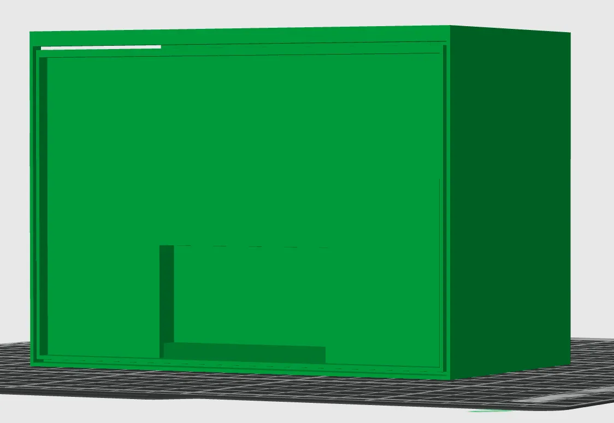
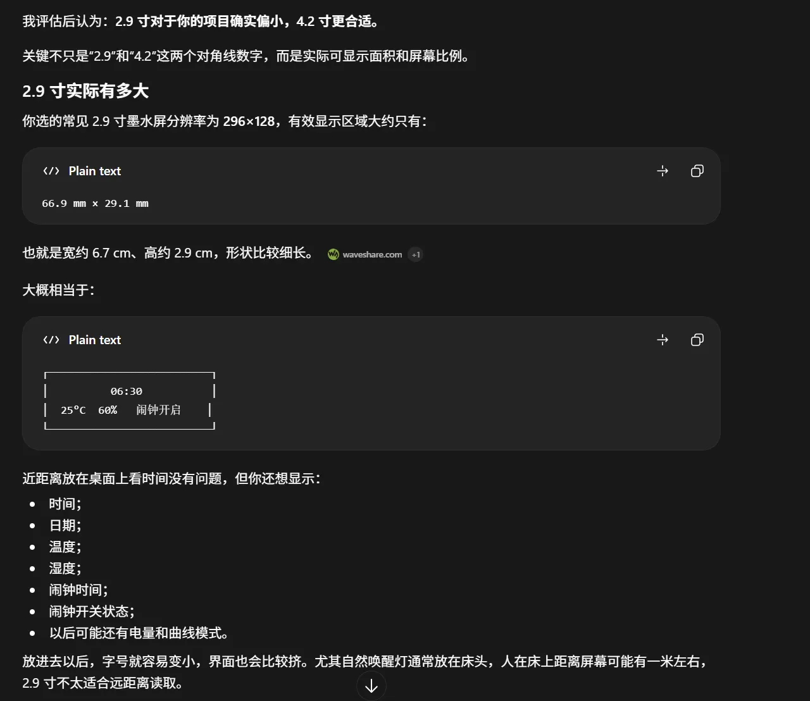
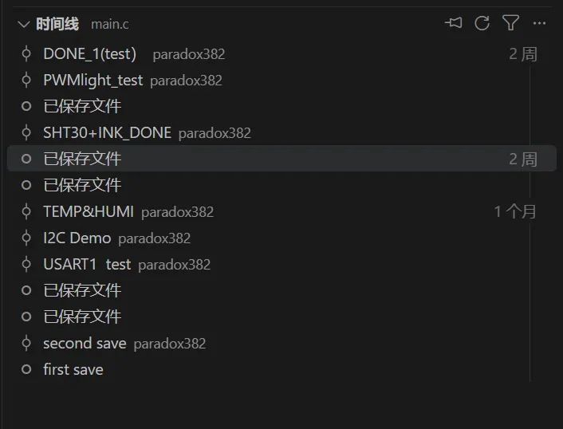
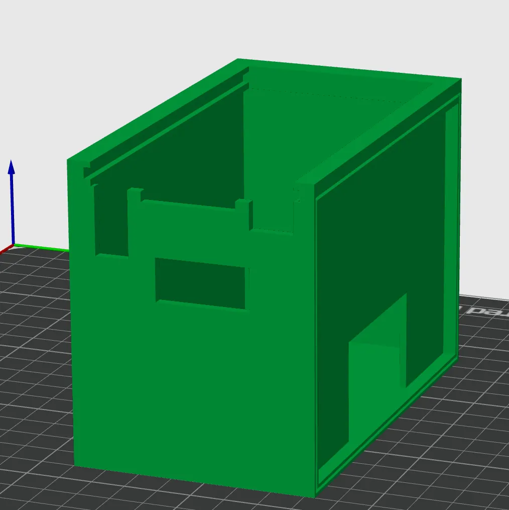

返回硬件项目索引
返回硬件项目索引自然光唤醒灯
阅读项目文档 ↓自然光唤醒灯面向晨间起床场景，通过逐步增强的灯光模拟日出，让使用者在光线由暗到亮的过程中醒来，兼具时间显示、温湿度监测功能。项目以 STM32 为主控，使用 DS3231 实时时钟提供日期和时间，SHT30 传感器采集室内温度与湿度，墨水屏集中显示这些信息，便于在床边查看。照明部分采用 5 V LED，由主控输出 PWM 信号调节亮度。亮度曲线可自定义，用于改变各阶段的亮度和变化节奏，呈现不同的日出效果。整体外壳由3D打印实现。





项目文档
暑期项目介绍 副本
暑期项目介绍 副本
项目概况
项目名称：NaturalLight 自然光唤醒灯
mentor：巩子杰
项目简介
传统闹钟以声音在某一时刻突然介入。NaturalLight 将唤醒过程前移：系统以 DS3231 的实时时间为基准，在闹钟前进入渐亮窗口，按照平方曲线逐步提高 LED 亮度；到点后保持全亮，并允许用户通过实体按键停止当天唤醒。
核心功能
时间与闹钟：每秒读取 DS3231，支持校时、每日闹钟启停。
环境感知：SHT30 每 10 秒采样温湿度，并对温度和湿度数据分别进行 CRC 校验。
晨光控制：TIM3_CH3 输出 1 kHz PWM，通过平方曲线完成柔和渐亮，到点后进入全亮保持。
本地交互：四枚低有效按键采用内部上拉和 30 ms 消抖，用于编辑时间、闹钟与启用状态。
状态显示：SSD1677 驱动 800 × 480 墨水屏，显示时间、闹钟、环境数据与运行状态。
异常保护：上电先将输出归零；时间无效、PWM 异常或墨水屏超时时，系统回到安全状态。
关键技术规格
项目成长
时间线说明：
first save、second save：对vscode编程环境，stm32相关插件进行简单配置，同时在vscode中配置codex，并进行简单试验；
USART1 test：串口调试代码编写；
I2C Demo：对STM32的I2C模块进行开发试验，使用DS3231时钟模块进行；
TEMP&HUMI:I2C逻辑验证成立后，进行另一个I2C设备SHT30的开发；
SHT30+INK_DONE：对SHT30部分代码进行修改；对墨水屏进行开发；
PWMlight:灯光渐亮方式代码的编写；
DONE_1：最终版代码；
嵌入式代码
C
include "main.h"
include <string.h>
typedef enum
{
I2C_SCAN_WAITING = 0,
I2C_SCAN_RUNNING,
I2C_SCAN_COMPLETE,
I2C_SCAN_FAILED
} I2C_ScanState;
typedef enum
{
SHT30_WAITING_FOR_SCAN = 0,
SHT30_RESET_WAIT,
SHT30_IDLE,
SHT30_MEASURING,
SHT30_UNAVAILABLE
} SHT30_State;
typedef enum
{
EPD_TEST_WAITING = 0,
EPD_TEST_POWER_WAIT,
EPD_TEST_RESET_LOW_WAIT,
EPD_TEST_RESET_HIGH_WAIT,
EPD_TEST_WAIT_READY_BEFORE_RESET,
EPD_TEST_WAIT_READY_AFTER_RESET,
EPD_TEST_TRANSFER_IMAGE,
EPD_TEST_WAIT_REFRESH,
EPD_TEST_SLEEP_WAIT,
EPD_TEST_COMPLETE,
EPD_TEST_FAILED
} EPD_TestState;
typedef enum
{
EPD_REFRESH_FULL = 0,
EPD_REFRESH_PARTIAL
} EPD_RefreshMode;
typedef enum
{
RTC_WAITING_FOR_SCAN = 0,
RTC_READY,
RTC_UNAVAILABLE
} RTC_State;
typedef enum
{
WAKE_IDLE = 0,
WAKE_SUNRISE,
WAKE_FULL_HOLD,
WAKE_STOPPED,
WAKE_ERROR
} WakeState;
typedef enum
{
SETTING_NONE = 0,
SETTING_TIME_HOUR,
SETTING_TIME_MINUTE,
SETTING_ALARM_HOUR,
SETTING_ALARM_MINUTE,
SETTING_ALARM_ENABLE
} SettingField;
typedef enum
{
KEY_ID_SET = 0,
KEY_ID_UP,
KEY_ID_DOWN,
KEY_ID_OK_STOP,
KEY_ID_COUNT
} KeyId;
typedef struct
{
GPIO_TypeDef *port;
uint16_t pin;
uint8_t raw_pressed;
uint8_t stable_pressed;
uint32_t raw_changed_ms;
} KeyDebounce;
typedef struct
{
char character;
uint8_t columns[5];
} EPD_Glyph;
/* USER CODE END PTD */
/* Private define ------------------------------------------------------------*/
/* USER CODE BEGIN PD */
/* E-paper interface (SPI transmit-only; PA6 remains a GPIO power control). */
define EPD_RST_Pin GPIO_PIN_1
define EPD_RST_GPIO_Port GPIOA
define EPD_DC_Pin GPIO_PIN_2
define EPD_DC_GPIO_Port GPIOA
define EPD_BUSY_Pin GPIO_PIN_3
define EPD_BUSY_GPIO_Port GPIOA
define EPD_CS_Pin GPIO_PIN_4
define EPD_CS_GPIO_Port GPIOA
define EPD_SCK_Pin GPIO_PIN_5
define EPD_SCK_GPIO_Port GPIOA
define EPD_PWR_Pin GPIO_PIN_6
define EPD_PWR_GPIO_Port GPIOA
define EPD_MOSI_Pin GPIO_PIN_7
define EPD_MOSI_GPIO_Port GPIOA
/* Shared I2C bus. */
define I2C_SCL_Pin GPIO_PIN_6
define I2C_SCL_GPIO_Port GPIOB
define I2C_SDA_Pin GPIO_PIN_7
define I2C_SDA_GPIO_Port GPIOB
/* LED MOSFET PWM control. */
define LED_PWM_Pin GPIO_PIN_0
define LED_PWM_GPIO_Port GPIOB
/* Active-low keys. */
define KEY_SET_Pin GPIO_PIN_2
define KEY_SET_GPIO_Port GPIOE
define KEY_UP_Pin GPIO_PIN_3
define KEY_UP_GPIO_Port GPIOE
define KEY_DOWN_Pin GPIO_PIN_4
define KEY_DOWN_GPIO_Port GPIOE
define KEY_OK_STOP_Pin GPIO_PIN_5
define KEY_OK_STOP_GPIO_Port GPIOE
/* Reserved PCB USART1 header; PA9/PA10 are not initialized in this build. */
define UART_TX_Pin GPIO_PIN_9
define UART_TX_GPIO_Port GPIOA
define UART_RX_Pin GPIO_PIN_10
define UART_RX_GPIO_Port GPIOA
define I2C_SCAN_FIRST_ADDRESS 0x08U
define I2C_SCAN_LAST_ADDRESS 0x77U
define I2C_SCAN_START_DELAY_MS 500U
define I2C_SCAN_STEP_INTERVAL_MS 5U
define I2C_SCAN_PROBE_TIMEOUT_MS 2U
define I2C_SCAN_MAX_STORED_DEVICES 16U
define SHT30_ADDRESS_PRIMARY 0x44U
define SHT30_ADDRESS_ALTERNATE 0x45U
define SHT30_SOFT_RESET_MSB 0x30U
define SHT30_SOFT_RESET_LSB 0xA2U
define SHT30_MEASURE_MSB 0x24U
define SHT30_MEASURE_LSB 0x00U
define SHT30_RESET_WAIT_MS 2U
define SHT30_MEASUREMENT_WAIT_MS 20U
define SHT30_READ_INTERVAL_MS 10000U
define SHT30_I2C_TIMEOUT_MS 5U
define DS3231_ADDRESS 0x68U
define DS3231_REG_TIME 0x00U
define DS3231_REG_ALARM1 0x07U
define DS3231_REG_CONTROL 0x0EU
define DS3231_REG_STATUS 0x0FU
define DS3231_I2C_TIMEOUT_MS 10U
define DS3231_READ_INTERVAL_MS 1000U
define DS3231_OSF_BIT 0x80U
define DS3231_A1IE_BIT 0x01U
define DS3231_INTCN_BIT 0x04U
define DS3231_A1F_BIT 0x01U
define EPD_WIDTH 800U
define EPD_HEIGHT 480U
define EPD_BYTES_PER_ROW (EPD_WIDTH / 8U)
define EPD_FRAMEBUFFER_SIZE (EPD_BYTES_PER_ROW * EPD_HEIGHT)
define EPD_TEST_START_DELAY_MS 1500U
define EPD_SENSOR_WAIT_TIMEOUT_MS 15000U
define EPD_REFRESH_INTERVAL_MS 60000U
define EPD_PARTIALS_BEFORE_FULL 5U
define EPD_PARTIAL_X 48U
define EPD_PARTIAL_Y 105U
define EPD_PARTIAL_WIDTH 704U
define EPD_PARTIAL_HEIGHT 320U
define EPD_PARTIAL_BYTES_PER_ROW (EPD_PARTIAL_WIDTH / 8U)
define EPD_PARTIAL_Y_REVERSED
(EPD_HEIGHT - EPD_PARTIAL_Y - EPD_PARTIAL_HEIGHT)
define EPD_POWER_WAIT_MS 100U
define EPD_RESET_LOW_MS 2U
define EPD_RESET_HIGH_MS 100U
define EPD_COMMAND_SETTLE_MS 5U
define EPD_REFRESH_MINIMUM_MS 100U
define EPD_BUSY_TIMEOUT_MS 15000U
define EPD_SLEEP_WAIT_MS 100U
define EPD_SPI_TIMEOUT_MS 2000U
define EPD_ERROR_NONE 0U
define EPD_ERROR_SPI_UNAVAILABLE 1U
define EPD_ERROR_BUSY_BEFORE_RESET 2U
define EPD_ERROR_SOFTWARE_RESET 3U
define EPD_ERROR_BUSY_AFTER_RESET 4U
define EPD_ERROR_CONFIGURATION 5U
define EPD_ERROR_IMAGE_TRANSFER 6U
define EPD_ERROR_REFRESH_TIMEOUT 7U
define EPD_ERROR_SLEEP_COMMAND 8U
define LED_PWM_FREQUENCY_HZ 1000U
define LED_PWM_PRESCALER 8U
define LED_PWM_PERIOD_COUNTS 1000U
define WAKE_RAMP_DURATION_SECONDS 60UL
define WAKE_FULL_HOLD_SECONDS 30UL
define SECONDS_PER_MINUTE 60UL
define SECONDS_PER_DAY 86400UL
define DEFAULT_ALARM_HOUR 7U
define DEFAULT_ALARM_MINUTE 0U
define KEY_DEBOUNCE_MS 30U
/* USER CODE END PD */
/* Private macro -------------------------------------------------------------*/
/* USER CODE BEGIN PM */
/* USER CODE END PM */
/* Private variables ---------------------------------------------------------*/
/* USER CODE BEGIN PV */
I2C_HandleTypeDef hi2c1;
SPI_HandleTypeDef hspi1;
TIM_HandleTypeDef htim3;
volatile uint8_t g_i2c_ready = 0U;
volatile uint8_t g_i2c_scan_complete = 0U;
volatile uint8_t g_i2c_device_count = 0U;
volatile uint8_t g_i2c_stored_address_count = 0U;
volatile uint8_t g_i2c_found_addresses[I2C_SCAN_MAX_STORED_DEVICES] = {0U};
volatile uint32_t g_i2c_error_count = 0U;
volatile uint32_t g_i2c_last_error = HAL_I2C_ERROR_NONE;
volatile I2C_ScanState g_i2c_scan_state = I2C_SCAN_WAITING;
static uint8_t i2c_scan_address = I2C_SCAN_FIRST_ADDRESS;
static uint32_t i2c_scan_wait_started_ms = 0U;
static uint32_t i2c_scan_last_step_ms = 0U;
volatile uint8_t g_sht30_ready = 0U;
volatile uint8_t g_sht30_data_valid = 0U;
volatile uint8_t g_sht30_address = 0U;
volatile int16_t g_sht30_temperature_tenths_c = 0;
volatile uint16_t g_sht30_humidity_tenths_rh = 0U;
volatile uint32_t g_sht30_success_count = 0U;
volatile uint32_t g_sht30_init_error_count = 0U;
volatile uint32_t g_sht30_read_error_count = 0U;
volatile uint32_t g_sht30_crc_error_count = 0U;
volatile SHT30_State g_sht30_state = SHT30_WAITING_FOR_SCAN;
static uint32_t sht30_state_started_ms = 0U;
static uint32_t sht30_last_read_ms = 0U;
volatile uint8_t g_rtc_ready = 0U;
volatile uint8_t g_rtc_time_valid = 0U;
volatile uint8_t g_rtc_hour = 0U;
volatile uint8_t g_rtc_minute = 0U;
volatile uint8_t g_rtc_second = 0U;
volatile uint8_t g_rtc_weekday = 1U;
volatile uint8_t g_rtc_date = 1U;
volatile uint8_t g_rtc_month = 1U;
volatile uint8_t g_rtc_year = 0U;
volatile uint32_t g_rtc_read_count = 0U;
volatile uint32_t g_rtc_error_count = 0U;
volatile uint32_t g_rtc_last_i2c_error = HAL_I2C_ERROR_NONE;
volatile RTC_State g_rtc_state = RTC_WAITING_FOR_SCAN;
static uint32_t rtc_last_read_ms = 0U;
static uint8_t rtc_last_display_hour = 0xFFU;
static uint8_t rtc_last_display_minute = 0xFFU;
volatile uint8_t g_spi_ready = 0U;
volatile uint32_t g_spi_error_count = 0U;
volatile uint32_t g_spi_last_error = HAL_SPI_ERROR_NONE;
volatile EPD_TestState g_epd_state = EPD_TEST_WAITING;
volatile uint8_t g_epd_refresh_complete = 0U;
volatile uint32_t g_epd_error_code = EPD_ERROR_NONE;
volatile uint32_t g_epd_busy_timeout_count = 0U;
volatile uint32_t g_epd_spi_error_count = 0U;
volatile uint32_t g_epd_total_refresh_count = 0U;
volatile uint32_t g_epd_full_refresh_count = 0U;
volatile uint32_t g_epd_partial_refresh_count = 0U;
volatile EPD_RefreshMode g_epd_refresh_mode = EPD_REFRESH_FULL;
static uint8_t epd_framebuffer[EPD_FRAMEBUFFER_SIZE];
static uint32_t epd_boot_started_ms = 0U;
static uint32_t epd_state_started_ms = 0U;
static uint32_t epd_last_refresh_ms = 0U;
static volatile uint8_t epd_refresh_requested = 0U;
volatile uint8_t g_led_pwm_ready = 0U;
volatile uint8_t g_led_brightness = 0U;
volatile uint16_t g_led_pwm_compare = 0U;
volatile uint32_t g_led_pwm_error_count = 0U;
volatile WakeState g_wake_state = WAKE_IDLE;
volatile uint16_t g_wake_progress_permille = 0U;
volatile uint8_t g_alarm_hour = DEFAULT_ALARM_HOUR;
volatile uint8_t g_alarm_minute = DEFAULT_ALARM_MINUTE;
volatile uint8_t g_alarm_enabled = 1U;
volatile uint8_t g_alarm_stop_latched = 0U;
volatile uint32_t g_alarm_stop_date_key = 0U;
volatile SettingField g_setting_field = SETTING_NONE;
volatile uint8_t g_setting_hour = 0U;
volatile uint8_t g_setting_minute = 0U;
volatile uint8_t g_setting_alarm_hour = DEFAULT_ALARM_HOUR;
volatile uint8_t g_setting_alarm_minute = DEFAULT_ALARM_MINUTE;
volatile uint8_t g_setting_alarm_enabled = 1U;
volatile uint8_t g_setting_save_error = 0U;
volatile uint8_t g_key_stable_mask = 0U;
volatile uint8_t g_key_last_pressed = 0xFFU;
volatile uint32_t g_key_press_count[KEY_ID_COUNT] = {0U};
static KeyDebounce key_buttons[KEY_ID_COUNT] =
{
{KEY_SET_GPIO_Port, KEY_SET_Pin, 0U, 0U, 0U},
{KEY_UP_GPIO_Port, KEY_UP_Pin, 0U, 0U, 0U},
{KEY_DOWN_GPIO_Port, KEY_DOWN_Pin, 0U, 0U, 0U},
{KEY_OK_STOP_GPIO_Port, KEY_OK_STOP_Pin, 0U, 0U, 0U}
};
static const EPD_Glyph epd_font[] =
{
{' ', {0x00U, 0x00U, 0x00U, 0x00U, 0x00U}},
{'%', {0x62U, 0x64U, 0x08U, 0x13U, 0x23U}},
{'-', {0x08U, 0x08U, 0x08U, 0x08U, 0x08U}},
{'.', {0x00U, 0x60U, 0x60U, 0x00U, 0x00U}},
{':', {0x00U, 0x36U, 0x36U, 0x00U, 0x00U}},
{'0', {0x3EU, 0x51U, 0x49U, 0x45U, 0x3EU}},
{'1', {0x00U, 0x42U, 0x7FU, 0x40U, 0x00U}},
{'2', {0x42U, 0x61U, 0x51U, 0x49U, 0x46U}},
{'3', {0x21U, 0x41U, 0x45U, 0x4BU, 0x31U}},
{'4', {0x18U, 0x14U, 0x12U, 0x7FU, 0x10U}},
{'5', {0x27U, 0x45U, 0x45U, 0x45U, 0x39U}},
{'6', {0x3CU, 0x4AU, 0x49U, 0x49U, 0x30U}},
{'7', {0x01U, 0x71U, 0x09U, 0x05U, 0x03U}},
{'8', {0x36U, 0x49U, 0x49U, 0x49U, 0x36U}},
{'9', {0x06U, 0x49U, 0x49U, 0x29U, 0x1EU}},
{'?', {0x02U, 0x01U, 0x51U, 0x09U, 0x06U}},
{'A', {0x7EU, 0x11U, 0x11U, 0x11U, 0x7EU}},
{'B', {0x7FU, 0x49U, 0x49U, 0x49U, 0x36U}},
{'C', {0x3EU, 0x41U, 0x41U, 0x41U, 0x22U}},
{'D', {0x7FU, 0x41U, 0x41U, 0x22U, 0x1CU}},
{'E', {0x7FU, 0x49U, 0x49U, 0x49U, 0x41U}},
{'F', {0x7FU, 0x09U, 0x09U, 0x09U, 0x01U}},
{'G', {0x3EU, 0x41U, 0x49U, 0x49U, 0x7AU}},
{'H', {0x7FU, 0x08U, 0x08U, 0x08U, 0x7FU}},
{'I', {0x00U, 0x41U, 0x7FU, 0x41U, 0x00U}},
{'K', {0x7FU, 0x08U, 0x14U, 0x22U, 0x41U}},
{'L', {0x7FU, 0x40U, 0x40U, 0x40U, 0x40U}},
{'M', {0x7FU, 0x02U, 0x0CU, 0x02U, 0x7FU}},
{'N', {0x7FU, 0x04U, 0x08U, 0x10U, 0x7FU}},
{'O', {0x3EU, 0x41U, 0x41U, 0x41U, 0x3EU}},
{'P', {0x7FU, 0x09U, 0x09U, 0x09U, 0x06U}},
{'R', {0x7FU, 0x09U, 0x19U, 0x29U, 0x46U}},
{'S', {0x46U, 0x49U, 0x49U, 0x49U, 0x31U}},
{'T', {0x01U, 0x01U, 0x7FU, 0x01U, 0x01U}},
{'U', {0x3FU, 0x40U, 0x40U, 0x40U, 0x3FU}},
{'V', {0x1FU, 0x20U, 0x40U, 0x20U, 0x1FU}},
{'Y', {0x07U, 0x08U, 0x70U, 0x08U, 0x07U}}
};
/* USER CODE END PV */
/* Private function prototypes -----------------------------------------------*/
void SystemClock_Config(void);
static void MX_GPIO_Init(void);
static void MX_I2C1_Init(void);
static void MX_SPI1_Init(void);
static void MX_TIM3_Init(void);
void HAL_TIM_MspPostInit(TIM_HandleTypeDef* htim);
/* USER CODE BEGIN PFP */
static HAL_StatusTypeDef UART_SendText(const char *text);
static void UART_SendI2CAddress(uint8_t address);
static void UART_SendI2CSummary(uint8_t count);
static void I2C_ScanSchedule(void);
static void I2C_ScanTask(void);
static uint8_t SHT30_CalculateCrc(const uint8_t *data, uint8_t length);
static uint8_t SHT30_FindAddress(void);
static void SHT30_RecordI2cError(void);
static void Text_AppendUnsigned(char *text, size_t *index, uint32_t value);
static void UART_SendSHT30Reading(void);
static void SHT30_Task(void);
static uint8_t DS3231_BcdToBinary(uint8_t bcd);
static uint8_t DS3231_BinaryToBcd(uint8_t value);
static uint8_t DS3231_IsPresent(void);
static HAL_StatusTypeDef DS3231_ReadTime(void);
static HAL_StatusTypeDef DS3231_WriteTime(uint8_t hour, uint8_t minute);
static HAL_StatusTypeDef DS3231_ReadAlarmConfig(void);
static HAL_StatusTypeDef DS3231_WriteAlarmConfig(void);
static void DS3231_Task(void);
static HAL_StatusTypeDef EPD_SendCommand(uint8_t command);
static HAL_StatusTypeDef EPD_SendData(const uint8_t *data, uint16_t length);
static HAL_StatusTypeDef EPD_SendDataByte(uint8_t data);
static HAL_StatusTypeDef EPD_ConfigureController(void);
static HAL_StatusTypeDef EPD_ConfigurePartialWindow(void);
static HAL_StatusTypeDef EPD_TransferPartialImage(uint8_t ram_command);
static void EPD_SetPixel(uint16_t x, uint16_t y, uint8_t black);
static void EPD_DrawFilledRectangle(uint16_t x, uint16_t y,
uint16_t width, uint16_t height);
static const uint8_t *EPD_FindGlyph(char character);
static void EPD_DrawText(uint16_t x, uint16_t y, const char *text,
uint8_t scale);
static void EPD_BuildTestImage(void);
static void EPD_RequestRefresh(void);
static void EPD_Fail(uint32_t error_code);
static void EPD_TestTask(void);
static void LED_SetBrightness(uint8_t brightness);
static void LED_Fail(void);
static void WakeAlarm_Task(void);
static void Keys_Init(void);
static void Key_HandlePress(KeyId key_id);
static void Keys_Task(void);
/* USER CODE END PFP */
/* Private user code ---------------------------------------------------------*/
/* USER CODE BEGIN 0 */
static HAL_StatusTypeDef UART_SendText(const char *text)
{
/* Logging hook intentionally disabled; inspect volatile globals via SWD. */
(void)text;
return HAL_OK;
}
static void UART_SendI2CAddress(uint8_t address)
{
static const char hex_digits[] = "0123456789ABCDEF";
char line[] = "[I2C] device found at 0x00rn";
size_t length = strlen(line);
line[length - 4U] = hex_digits[(address >> 4U) & 0x0FU];
line[length - 3U] = hex_digits[address & 0x0FU];
(void)UART_SendText(line);
}
static void UART_SendI2CSummary(uint8_t count)
{
static const char prefix[] = "[I2C] scan complete, devices: ";
char line[40];
size_t index;
(void)strcpy(line, prefix);
index = strlen(line);
if (count >= 100U)
{
line[index++] = (char)('0' + (count / 100U));
}
if (count >= 10U)
{
line[index++] = (char)('0' + ((count / 10U) % 10U));
}
line[index++] = (char)('0' + (count % 10U));
line[index++] = 'r';
line[index++] = 'n';
line[index] = '0';
(void)UART_SendText(line);
}
static void I2C_ScanSchedule(void)
{
uint8_t index;
g_i2c_scan_complete = 0U;
g_i2c_device_count = 0U;
g_i2c_stored_address_count = 0U;
for (index = 0U; index < I2C_SCAN_MAX_STORED_DEVICES; index++)
{
g_i2c_found_addresses[index] = 0U;
}
i2c_scan_address = I2C_SCAN_FIRST_ADDRESS;
i2c_scan_wait_started_ms = HAL_GetTick();
i2c_scan_last_step_ms = i2c_scan_wait_started_ms;
g_i2c_scan_state = (g_i2c_ready != 0U) ? I2C_SCAN_WAITING : I2C_SCAN_FAILED;
}
static void I2C_ScanTask(void)
{
HAL_StatusTypeDef status;
uint32_t error_code;
uint32_t now_ms;
if ((g_i2c_ready == 0U) · · (g_i2c_scan_state == I2C_SCAN_COMPLETE)
(g_i2c_scan_state == I2C_SCAN_FAILED))
{
return;
}
now_ms = HAL_GetTick();
if (g_i2c_scan_state == I2C_SCAN_WAITING)
{
if ((uint32_t)(now_ms - i2c_scan_wait_started_ms) < I2C_SCAN_START_DELAY_MS)
{
return;
}
(void)UART_SendText("[I2C] scanning addresses 0x08-0x77...rn");
i2c_scan_last_step_ms = now_ms - I2C_SCAN_STEP_INTERVAL_MS;
g_i2c_scan_state = I2C_SCAN_RUNNING;
}
if ((uint32_t)(now_ms - i2c_scan_last_step_ms) < I2C_SCAN_STEP_INTERVAL_MS)
{
return;
}
i2c_scan_last_step_ms = now_ms;
status = HAL_I2C_IsDeviceReady(&hi2c1, (uint16_t)(i2c_scan_address << 1U),
1U, I2C_SCAN_PROBE_TIMEOUT_MS);
if (status == HAL_OK)
{
if (g_i2c_stored_address_count < I2C_SCAN_MAX_STORED_DEVICES)
{
g_i2c_found_addresses[g_i2c_stored_address_count] = i2c_scan_address;
g_i2c_stored_address_count++;
}
g_i2c_device_count++;
UART_SendI2CAddress(i2c_scan_address);
}
else
{
error_code = HAL_I2C_GetError(&hi2c1);
/*
* In the STM32F1 HAL, HAL_I2C_IsDeviceReady() returns HAL_ERROR for an
* unused address after clearing AF, and ErrorCode can therefore remain
* HAL_I2C_ERROR_NONE. Both NONE and AF mean "no device at this address"
* during a scan; only other status/error combinations indicate a bus
* fault that should stop the scan.
*/
if ((status != HAL_ERROR)
((error_code != HAL_I2C_ERROR_NONE) &&
(error_code != HAL_I2C_ERROR_AF)))
{
g_i2c_error_count++;
g_i2c_last_error = error_code;
g_i2c_scan_complete = 1U;
g_i2c_scan_state = I2C_SCAN_FAILED;
(void)UART_SendText("[ERROR] I2C bus failure; scan stoppedrn");
return;
}
}
if (i2c_scan_address >= I2C_SCAN_LAST_ADDRESS)
{
g_i2c_scan_complete = 1U;
g_i2c_scan_state = I2C_SCAN_COMPLETE;
UART_SendI2CSummary(g_i2c_device_count);
}
else
{
i2c_scan_address++;
}
}
static uint8_t SHT30_CalculateCrc(const uint8_t *data, uint8_t length)
{
uint8_t crc = 0xFFU;
uint8_t byte_index;
uint8_t bit_index;
for (byte_index = 0U; byte_index < length; byte_index++)
{
crc ^= data[byte_index];
for (bit_index = 0U; bit_index < 8U; bit_index++)
{
if ((crc & 0x80U) != 0U)
{
crc = (uint8_t)((crc << 1U) ^ 0x31U);
}
else
{
crc <<= 1U;
}
}
}
return crc;
}
static uint8_t SHT30_FindAddress(void)
{
uint8_t index;
uint8_t address;
for (index = 0U; index < g_i2c_stored_address_count; index++)
{
address = g_i2c_found_addresses[index];
if ((address == SHT30_ADDRESS_PRIMARY)
(address == SHT30_ADDRESS_ALTERNATE))
{
return address;
}
}
return 0U;
}
static void SHT30_RecordI2cError(void)
{
g_sht30_read_error_count++;
g_i2c_error_count++;
g_i2c_last_error = HAL_I2C_GetError(&hi2c1);
}
static void Text_AppendUnsigned(char *text, size_t *index, uint32_t value)
{
char reversed_digits[10];
uint8_t digit_count = 0U;
do
{
reversed_digits[digit_count++] = (char)('0' + (value % 10U));
value /= 10U;
} while ((value != 0U) && (digit_count < sizeof(reversed_digits)));
while (digit_count > 0U)
{
digit_count--;
text[(*index)++] = reversed_digits[digit_count];
}
}
static void UART_SendSHT30Reading(void)
{
static const char temperature_prefix[] = "[SHT30] Temperature: ";
static const char humidity_prefix[] = " C, Humidity: ";
int32_t temperature_tenths = g_sht30_temperature_tenths_c;
uint32_t magnitude;
size_t index;
char line[64];
(void)strcpy(line, temperature_prefix);
index = strlen(line);
if (temperature_tenths < 0)
{
line[index++] = '-';
magnitude = (uint32_t)(-temperature_tenths);
}
else
{
magnitude = (uint32_t)temperature_tenths;
}
Text_AppendUnsigned(line, &index, magnitude / 10U);
line[index++] = '.';
line[index++] = (char)('0' + (magnitude % 10U));
(void)strcpy(&line[index], humidity_prefix);
index += strlen(humidity_prefix);
Text_AppendUnsigned(line, &index, g_sht30_humidity_tenths_rh / 10U);
line[index++] = '.';
line[index++] = (char)('0' + (g_sht30_humidity_tenths_rh % 10U));
line[index++] = ' ';
line[index++] = '%';
line[index++] = 'R';
line[index++] = 'H';
line[index++] = 'r';
line[index++] = 'n';
line[index] = '0';
(void)UART_SendText(line);
}
static void SHT30_Task(void)
{
static const uint8_t reset_command[2] =
{
SHT30_SOFT_RESET_MSB, SHT30_SOFT_RESET_LSB
};
static const uint8_t measurement_command[2] =
{
SHT30_MEASURE_MSB, SHT30_MEASURE_LSB
};
uint8_t received_data[6];
uint16_t raw_temperature;
uint16_t raw_humidity;
uint32_t now_ms;
HAL_StatusTypeDef status;
if ((g_i2c_ready == 0U) · · (g_sht30_state == SHT30_UNAVAILABLE))
{
return;
}
now_ms = HAL_GetTick();
if (g_sht30_state == SHT30_WAITING_FOR_SCAN)
{
if (g_i2c_scan_complete == 0U)
{
return;
}
if (g_i2c_scan_state != I2C_SCAN_COMPLETE)
{
g_sht30_init_error_count++;
g_sht30_state = SHT30_UNAVAILABLE;
(void)UART_SendText("[ERROR] SHT30 unavailable: I2C scan failedrn");
return;
}
g_sht30_address = SHT30_FindAddress();
if (g_sht30_address == 0U)
{
g_sht30_init_error_count++;
g_sht30_state = SHT30_UNAVAILABLE;
(void)UART_SendText("[ERROR] SHT30 not found at 0x44 or 0x45rn");
return;
}
status = HAL_I2C_Master_Transmit(&hi2c1,
(uint16_t)(g_sht30_address << 1U),
(uint8_t *)reset_command,
sizeof(reset_command),
SHT30_I2C_TIMEOUT_MS);
if (status != HAL_OK)
{
g_sht30_init_error_count++;
g_i2c_error_count++;
g_i2c_last_error = HAL_I2C_GetError(&hi2c1);
g_sht30_state = SHT30_UNAVAILABLE;
(void)UART_SendText("[ERROR] SHT30 soft reset failedrn");
return;
}
sht30_state_started_ms = now_ms;
g_sht30_state = SHT30_RESET_WAIT;
return;
}
if (g_sht30_state == SHT30_RESET_WAIT)
{
if ((uint32_t)(now_ms - sht30_state_started_ms) < SHT30_RESET_WAIT_MS)
{
return;
}
g_sht30_ready = 1U;
sht30_last_read_ms = now_ms - SHT30_READ_INTERVAL_MS;
g_sht30_state = SHT30_IDLE;
(void)UART_SendText("[SHT30] initialized successfullyrn");
}
if (g_sht30_state == SHT30_IDLE)
{
if ((uint32_t)(now_ms - sht30_last_read_ms) < SHT30_READ_INTERVAL_MS)
{
return;
}
status = HAL_I2C_Master_Transmit(&hi2c1,
(uint16_t)(g_sht30_address << 1U),
(uint8_t *)measurement_command,
sizeof(measurement_command),
SHT30_I2C_TIMEOUT_MS);
if (status != HAL_OK)
{
SHT30_RecordI2cError();
sht30_last_read_ms = now_ms;
(void)UART_SendText("[ERROR] SHT30 measurement command failedrn");
return;
}
sht30_state_started_ms = now_ms;
g_sht30_state = SHT30_MEASURING;
return;
}
if ((g_sht30_state != SHT30_MEASURING)
((uint32_t)(now_ms - sht30_state_started_ms) < SHT30_MEASUREMENT_WAIT_MS))
{
return;
}
status = HAL_I2C_Master_Receive(&hi2c1,
(uint16_t)(g_sht30_address << 1U),
received_data, sizeof(received_data),
SHT30_I2C_TIMEOUT_MS);
sht30_last_read_ms = now_ms;
g_sht30_state = SHT30_IDLE;
if (status != HAL_OK)
{
SHT30_RecordI2cError();
(void)UART_SendText("[ERROR] SHT30 measurement read failedrn");
return;
}
if ((SHT30_CalculateCrc(&received_data[0], 2U) != received_data[2])
(SHT30_CalculateCrc(&received_data[3], 2U) != received_data[5]))
{
g_sht30_crc_error_count++;
(void)UART_SendText("[ERROR] SHT30 CRC check failedrn");
return;
}
raw_temperature = (uint16_t)(((uint16_t)received_data[0] << 8U)
received_data[1]);
raw_humidity = (uint16_t)(((uint16_t)received_data[3] << 8U)
received_data[4]);
g_sht30_temperature_tenths_c =
(int16_t)(-450L + (int32_t)(((uint32_t)1750U * raw_temperature +
32767U) / 65535U));
g_sht30_humidity_tenths_rh =
(uint16_t)(((uint32_t)1000U * raw_humidity + 32767U) / 65535U);
g_sht30_data_valid = 1U;
g_sht30_success_count++;
UART_SendSHT30Reading();
}
static uint8_t DS3231_BcdToBinary(uint8_t bcd)
{
return (uint8_t)(((bcd >> 4U) * 10U) + (bcd & 0x0FU));
}
static uint8_t DS3231_BinaryToBcd(uint8_t value)
{
return (uint8_t)(((value / 10U) << 4U) · (value % 10U));
}
static uint8_t DS3231_IsPresent(void)
{
uint8_t index;
for (index = 0U; index < g_i2c_stored_address_count; index++)
{
if (g_i2c_found_addresses[index] == DS3231_ADDRESS)
{
return 1U;
}
}
return 0U;
}
static HAL_StatusTypeDef DS3231_ReadTime(void)
{
uint8_t data[7];
uint8_t status_register;
uint8_t hour;
HAL_StatusTypeDef status;
status = HAL_I2C_Mem_Read(&hi2c1, (uint16_t)(DS3231_ADDRESS << 1U),
DS3231_REG_TIME, I2C_MEMADD_SIZE_8BIT,
data, sizeof(data), DS3231_I2C_TIMEOUT_MS);
if (status != HAL_OK)
{
g_rtc_error_count++;
g_rtc_last_i2c_error = HAL_I2C_GetError(&hi2c1);
g_rtc_time_valid = 0U;
return status;
}
if ((data[2] & 0x40U) != 0U)
{
hour = DS3231_BcdToBinary((uint8_t)(data[2] & 0x1FU));
if (hour == 12U)
{
hour = 0U;
}
if ((data[2] & 0x20U) != 0U)
{
hour = (uint8_t)(hour + 12U);
}
}
else
{
hour = DS3231_BcdToBinary((uint8_t)(data[2] & 0x3FU));
}
g_rtc_second = DS3231_BcdToBinary((uint8_t)(data[0] & 0x7FU));
g_rtc_minute = DS3231_BcdToBinary((uint8_t)(data[1] & 0x7FU));
g_rtc_hour = hour;
g_rtc_weekday = DS3231_BcdToBinary((uint8_t)(data[3] & 0x07U));
g_rtc_date = DS3231_BcdToBinary((uint8_t)(data[4] & 0x3FU));
g_rtc_month = DS3231_BcdToBinary((uint8_t)(data[5] & 0x1FU));
g_rtc_year = DS3231_BcdToBinary(data[6]);
if ((g_rtc_second > 59U) · · (g_rtc_minute > 59U)
(g_rtc_hour > 23U) · · (g_rtc_weekday < 1U)
(g_rtc_weekday > 7U) · · (g_rtc_date < 1U)
(g_rtc_date > 31U) · · (g_rtc_month < 1U)
(g_rtc_month > 12U))
{
g_rtc_error_count++;
g_rtc_time_valid = 0U;
return HAL_ERROR;
}
status = HAL_I2C_Mem_Read(&hi2c1, (uint16_t)(DS3231_ADDRESS << 1U),
DS3231_REG_STATUS, I2C_MEMADD_SIZE_8BIT,
&status_register, 1U, DS3231_I2C_TIMEOUT_MS);
if (status != HAL_OK)
{
g_rtc_error_count++;
g_rtc_last_i2c_error = HAL_I2C_GetError(&hi2c1);
g_rtc_time_valid = 0U;
return status;
}
g_rtc_time_valid = ((status_register & DS3231_OSF_BIT) == 0U) ? 1U : 0U;
g_rtc_read_count++;
return HAL_OK;
}
static HAL_StatusTypeDef DS3231_WriteTime(uint8_t hour, uint8_t minute)
{
uint8_t data[3];
uint8_t status_register;
HAL_StatusTypeDef status;
if ((hour > 23U) · · (minute > 59U))
{
return HAL_ERROR;
}
data[0] = 0x00U;
data[1] = DS3231_BinaryToBcd(minute);
data[2] = DS3231_BinaryToBcd(hour);
status = HAL_I2C_Mem_Write(&hi2c1, (uint16_t)(DS3231_ADDRESS << 1U),
DS3231_REG_TIME, I2C_MEMADD_SIZE_8BIT,
data, sizeof(data), DS3231_I2C_TIMEOUT_MS);
if (status != HAL_OK)
{
g_rtc_error_count++;
g_rtc_last_i2c_error = HAL_I2C_GetError(&hi2c1);
return status;
}
status = HAL_I2C_Mem_Read(&hi2c1, (uint16_t)(DS3231_ADDRESS << 1U),
DS3231_REG_STATUS, I2C_MEMADD_SIZE_8BIT,
&status_register, 1U, DS3231_I2C_TIMEOUT_MS);
if (status == HAL_OK)
{
status_register &= (uint8_t)(~DS3231_OSF_BIT);
status = HAL_I2C_Mem_Write(&hi2c1,
(uint16_t)(DS3231_ADDRESS << 1U),
DS3231_REG_STATUS, I2C_MEMADD_SIZE_8BIT,
&status_register, 1U,
DS3231_I2C_TIMEOUT_MS);
}
if (status != HAL_OK)
{
g_rtc_error_count++;
g_rtc_last_i2c_error = HAL_I2C_GetError(&hi2c1);
return status;
}
g_rtc_hour = hour;
g_rtc_minute = minute;
g_rtc_second = 0U;
g_rtc_time_valid = 1U;
rtc_last_read_ms = HAL_GetTick();
return HAL_OK;
}
static HAL_StatusTypeDef DS3231_WriteAlarmConfig(void)
{
uint8_t alarm_data[4];
uint8_t control_register;
uint8_t status_register;
HAL_StatusTypeDef status;
alarm_data[0] = 0x00U;
alarm_data[1] = DS3231_BinaryToBcd(g_alarm_minute);
alarm_data[2] = DS3231_BinaryToBcd(g_alarm_hour);
alarm_data[3] = 0x81U; /* A1M4=1: alarm repeats every day. */
status = HAL_I2C_Mem_Write(&hi2c1, (uint16_t)(DS3231_ADDRESS << 1U),
DS3231_REG_ALARM1, I2C_MEMADD_SIZE_8BIT,
alarm_data, sizeof(alarm_data),
DS3231_I2C_TIMEOUT_MS);
if (status != HAL_OK)
{
g_rtc_error_count++;
g_rtc_last_i2c_error = HAL_I2C_GetError(&hi2c1);
return status;
}
status = HAL_I2C_Mem_Read(&hi2c1, (uint16_t)(DS3231_ADDRESS << 1U),
DS3231_REG_CONTROL, I2C_MEMADD_SIZE_8BIT,
&control_register, 1U, DS3231_I2C_TIMEOUT_MS);
if (status == HAL_OK)
{
control_register · = DS3231_INTCN_BIT;
if (g_alarm_enabled != 0U)
{
control_register · = DS3231_A1IE_BIT;
}
else
{
control_register &= (uint8_t)(~DS3231_A1IE_BIT);
}
status = HAL_I2C_Mem_Write(&hi2c1,
(uint16_t)(DS3231_ADDRESS << 1U),
DS3231_REG_CONTROL, I2C_MEMADD_SIZE_8BIT,
&control_register, 1U,
DS3231_I2C_TIMEOUT_MS);
}
if (status == HAL_OK)
{
status = HAL_I2C_Mem_Read(&hi2c1,
(uint16_t)(DS3231_ADDRESS << 1U),
DS3231_REG_STATUS, I2C_MEMADD_SIZE_8BIT,
&status_register, 1U,
DS3231_I2C_TIMEOUT_MS);
}
if (status == HAL_OK)
{
status_register &= (uint8_t)(~DS3231_A1F_BIT);
status = HAL_I2C_Mem_Write(&hi2c1,
(uint16_t)(DS3231_ADDRESS << 1U),
DS3231_REG_STATUS, I2C_MEMADD_SIZE_8BIT,
&status_register, 1U,
DS3231_I2C_TIMEOUT_MS);
}
if (status != HAL_OK)
{
g_rtc_error_count++;
g_rtc_last_i2c_error = HAL_I2C_GetError(&hi2c1);
}
return status;
}
static HAL_StatusTypeDef DS3231_ReadAlarmConfig(void)
{
uint8_t alarm_data[4];
uint8_t control_register;
uint8_t minute;
uint8_t hour;
HAL_StatusTypeDef status;
status = HAL_I2C_Mem_Read(&hi2c1, (uint16_t)(DS3231_ADDRESS << 1U),
DS3231_REG_ALARM1, I2C_MEMADD_SIZE_8BIT,
alarm_data, sizeof(alarm_data),
DS3231_I2C_TIMEOUT_MS);
if (status == HAL_OK)
{
status = HAL_I2C_Mem_Read(&hi2c1,
(uint16_t)(DS3231_ADDRESS << 1U),
DS3231_REG_CONTROL, I2C_MEMADD_SIZE_8BIT,
&control_register, 1U,
DS3231_I2C_TIMEOUT_MS);
}
if (status != HAL_OK)
{
g_rtc_error_count++;
g_rtc_last_i2c_error = HAL_I2C_GetError(&hi2c1);
return status;
}
minute = DS3231_BcdToBinary((uint8_t)(alarm_data[1] & 0x7FU));
hour = DS3231_BcdToBinary((uint8_t)(alarm_data[2] & 0x3FU));
if (((alarm_data[0] & 0x80U) != 0U)
((alarm_data[1] & 0x80U) != 0U)
((alarm_data[2] & 0xC0U) != 0U)
((alarm_data[3] & 0x80U) == 0U)
(DS3231_BcdToBinary((uint8_t)(alarm_data[0] & 0x7FU)) != 0U)
(minute > 59U) · · (hour > 23U))
{
g_alarm_hour = DEFAULT_ALARM_HOUR;
g_alarm_minute = DEFAULT_ALARM_MINUTE;
g_alarm_enabled = 1U;
return DS3231_WriteAlarmConfig();
}
g_alarm_hour = hour;
g_alarm_minute = minute;
g_alarm_enabled = ((control_register & DS3231_A1IE_BIT) != 0U) ? 1U : 0U;
return HAL_OK;
}
static void DS3231_Task(void)
{
uint32_t now_ms = HAL_GetTick();
if (g_rtc_state == RTC_WAITING_FOR_SCAN)
{
if (g_i2c_scan_state == I2C_SCAN_FAILED)
{
g_rtc_state = RTC_UNAVAILABLE;
return;
}
if (g_i2c_scan_complete == 0U)
{
return;
}
if (DS3231_IsPresent() == 0U)
{
g_rtc_state = RTC_UNAVAILABLE;
return;
}
g_rtc_ready = 1U;
g_rtc_state = RTC_READY;
(void)DS3231_ReadAlarmConfig();
(void)DS3231_ReadTime();
rtc_last_read_ms = now_ms;
rtc_last_display_hour = g_rtc_hour;
rtc_last_display_minute = g_rtc_minute;
EPD_RequestRefresh();
return;
}
if ((g_rtc_state != RTC_READY)
((uint32_t)(now_ms - rtc_last_read_ms) < DS3231_READ_INTERVAL_MS))
{
return;
}
rtc_last_read_ms = now_ms;
if (DS3231_ReadTime() == HAL_OK)
{
if ((g_rtc_hour != rtc_last_display_hour)
(g_rtc_minute != rtc_last_display_minute))
{
rtc_last_display_hour = g_rtc_hour;
rtc_last_display_minute = g_rtc_minute;
EPD_RequestRefresh();
}
}
}
static HAL_StatusTypeDef EPD_SendCommand(uint8_t command)
{
HAL_StatusTypeDef status;
HAL_GPIO_WritePin(EPD_DC_GPIO_Port, EPD_DC_Pin, GPIO_PIN_RESET);
HAL_GPIO_WritePin(EPD_CS_GPIO_Port, EPD_CS_Pin, GPIO_PIN_RESET);
status = HAL_SPI_Transmit(&hspi1, &command, 1U, EPD_SPI_TIMEOUT_MS);
HAL_GPIO_WritePin(EPD_CS_GPIO_Port, EPD_CS_Pin, GPIO_PIN_SET);
if (status != HAL_OK)
{
g_epd_spi_error_count++;
g_spi_error_count++;
g_spi_last_error = HAL_SPI_GetError(&hspi1);
}
return status;
}
static HAL_StatusTypeDef EPD_SendData(const uint8_t *data, uint16_t length)
{
HAL_StatusTypeDef status;
if ((data == NULL) · · (length == 0U))
{
return HAL_ERROR;
}
HAL_GPIO_WritePin(EPD_DC_GPIO_Port, EPD_DC_Pin, GPIO_PIN_SET);
HAL_GPIO_WritePin(EPD_CS_GPIO_Port, EPD_CS_Pin, GPIO_PIN_RESET);
status = HAL_SPI_Transmit(&hspi1, (uint8_t *)data, length,
EPD_SPI_TIMEOUT_MS);
HAL_GPIO_WritePin(EPD_CS_GPIO_Port, EPD_CS_Pin, GPIO_PIN_SET);
if (status != HAL_OK)
{
g_epd_spi_error_count++;
g_spi_error_count++;
g_spi_last_error = HAL_SPI_GetError(&hspi1);
}
return status;
}
static HAL_StatusTypeDef EPD_SendDataByte(uint8_t data)
{
return EPD_SendData(&data, 1U);
}
static HAL_StatusTypeDef EPD_ConfigureController(void)
{
static const uint8_t soft_start[] = {0xAEU, 0xC7U, 0xC3U, 0xC0U, 0x80U};
static const uint8_t driver_output[] =
{
(uint8_t)((EPD_HEIGHT - 1U) & 0xFFU),
(uint8_t)((EPD_HEIGHT - 1U) >> 8U),
0x02U
};
static const uint8_t x_window[] =
{
0x00U, 0x00U,
(uint8_t)((EPD_WIDTH - 1U) & 0xFFU),
(uint8_t)(((EPD_WIDTH - 1U) >> 8U) & 0x03U)
};
static const uint8_t y_window[] =
{
(uint8_t)((EPD_HEIGHT - 1U) & 0xFFU),
(uint8_t)(((EPD_HEIGHT - 1U) >> 8U) & 0x03U),
0x00U, 0x00U
};
static const uint8_t cursor[] = {0x00U, 0x00U};
if ((EPD_SendCommand(0x18U) != HAL_OK)
(EPD_SendDataByte(0x80U) != HAL_OK)
(EPD_SendCommand(0x0CU) != HAL_OK)
(EPD_SendData(soft_start, sizeof(soft_start)) != HAL_OK)
(EPD_SendCommand(0x01U) != HAL_OK)
(EPD_SendData(driver_output, sizeof(driver_output)) != HAL_OK)
(EPD_SendCommand(0x3CU) != HAL_OK)
(EPD_SendDataByte(0x01U) != HAL_OK)
(EPD_SendCommand(0x11U) != HAL_OK)
(EPD_SendDataByte(0x01U) != HAL_OK)
(EPD_SendCommand(0x44U) != HAL_OK)
(EPD_SendData(x_window, sizeof(x_window)) != HAL_OK)
(EPD_SendCommand(0x45U) != HAL_OK)
(EPD_SendData(y_window, sizeof(y_window)) != HAL_OK)
(EPD_SendCommand(0x4EU) != HAL_OK)
(EPD_SendData(cursor, sizeof(cursor)) != HAL_OK)
(EPD_SendCommand(0x4FU) != HAL_OK)
(EPD_SendData(cursor, sizeof(cursor)) != HAL_OK))
{
return HAL_ERROR;
}
return HAL_OK;
}
static HAL_StatusTypeDef EPD_ConfigurePartialWindow(void)
{
static const uint8_t x_window[] =
{
(uint8_t)(EPD_PARTIAL_X & 0xFFU),
(uint8_t)((EPD_PARTIAL_X >> 8U) & 0x03U),
(uint8_t)((EPD_PARTIAL_X + EPD_PARTIAL_WIDTH - 1U) & 0xFFU),
(uint8_t)(((EPD_PARTIAL_X + EPD_PARTIAL_WIDTH - 1U) >> 8U) & 0x03U)
};
static const uint8_t y_window[] =
{
(uint8_t)((EPD_PARTIAL_Y_REVERSED + EPD_PARTIAL_HEIGHT - 1U) & 0xFFU),
(uint8_t)(((EPD_PARTIAL_Y_REVERSED + EPD_PARTIAL_HEIGHT - 1U) >> 8U) & 0x03U),
(uint8_t)(EPD_PARTIAL_Y_REVERSED & 0xFFU),
(uint8_t)((EPD_PARTIAL_Y_REVERSED >> 8U) & 0x03U)
};
static const uint8_t x_cursor[] =
{
(uint8_t)(EPD_PARTIAL_X & 0xFFU),
(uint8_t)((EPD_PARTIAL_X >> 8U) & 0x03U)
};
static const uint8_t y_cursor[] =
{
(uint8_t)((EPD_PARTIAL_Y_REVERSED + EPD_PARTIAL_HEIGHT - 1U) & 0xFFU),
(uint8_t)(((EPD_PARTIAL_Y_REVERSED + EPD_PARTIAL_HEIGHT - 1U) >> 8U) & 0x03U)
};
if ((EPD_SendCommand(0x18U) != HAL_OK)
(EPD_SendDataByte(0x80U) != HAL_OK)
(EPD_SendCommand(0x3CU) != HAL_OK)
(EPD_SendDataByte(0x80U) != HAL_OK)
(EPD_SendCommand(0x44U) != HAL_OK)
(EPD_SendData(x_window, sizeof(x_window)) != HAL_OK)
(EPD_SendCommand(0x45U) != HAL_OK)
(EPD_SendData(y_window, sizeof(y_window)) != HAL_OK)
(EPD_SendCommand(0x4EU) != HAL_OK)
(EPD_SendData(x_cursor, sizeof(x_cursor)) != HAL_OK)
(EPD_SendCommand(0x4FU) != HAL_OK)
(EPD_SendData(y_cursor, sizeof(y_cursor)) != HAL_OK))
{
return HAL_ERROR;
}
return HAL_OK;
}
static HAL_StatusTypeDef EPD_TransferPartialImage(uint8_t ram_command)
{
uint16_t row;
uint32_t offset;
if (EPD_SendCommand(ram_command) != HAL_OK)
{
return HAL_ERROR;
}
for (row = 0U; row < EPD_PARTIAL_HEIGHT; row++)
{
offset = ((uint32_t)(EPD_PARTIAL_Y + row) * EPD_BYTES_PER_ROW) +
(EPD_PARTIAL_X / 8U);
if (EPD_SendData(&epd_framebuffer[offset],
EPD_PARTIAL_BYTES_PER_ROW) != HAL_OK)
{
return HAL_ERROR;
}
}
return HAL_OK;
}
static void EPD_SetPixel(uint16_t x, uint16_t y, uint8_t black)
{
uint32_t index;
uint8_t mask;
if ((x >= EPD_WIDTH) · · (y >= EPD_HEIGHT))
{
return;
}
index = ((uint32_t)y * EPD_BYTES_PER_ROW) + (x >> 3U);
mask = (uint8_t)(0x80U >> (x & 0x07U));
if (black != 0U)
{
epd_framebuffer[index] &= (uint8_t)(~mask);
}
else
{
epd_framebuffer[index] · = mask;
}
}
static void EPD_DrawFilledRectangle(uint16_t x, uint16_t y,
uint16_t width, uint16_t height)
{
uint16_t x_offset;
uint16_t y_offset;
for (y_offset = 0U; y_offset < height; y_offset++)
{
for (x_offset = 0U; x_offset < width; x_offset++)
{
EPD_SetPixel((uint16_t)(x + x_offset), (uint16_t)(y + y_offset), 1U);
}
}
}
static const uint8_t *EPD_FindGlyph(char character)
{
size_t index;
for (index = 0U; index < (sizeof(epd_font) / sizeof(epd_font[0])); index++)
{
if (epd_font[index].character == character)
{
return epd_font[index].columns;
}
}
return EPD_FindGlyph('?');
}
static void EPD_DrawText(uint16_t x, uint16_t y, const char *text,
uint8_t scale)
{
const uint8_t *glyph;
uint16_t cursor_x = x;
uint8_t column;
uint8_t row;
uint8_t x_scale;
uint8_t y_scale;
if ((text == NULL) · · (scale == 0U))
{
return;
}
while (*text != '0')
{
glyph = EPD_FindGlyph(*text);
for (column = 0U; column < 5U; column++)
{
for (row = 0U; row < 7U; row++)
{
if ((glyph[column] & (uint8_t)(1U << row)) != 0U)
{
for (y_scale = 0U; y_scale < scale; y_scale++)
{
for (x_scale = 0U; x_scale < scale; x_scale++)
{
EPD_SetPixel((uint16_t)(cursor_x + (column * scale) + x_scale),
(uint16_t)(y + (row * scale) + y_scale), 1U);
}
}
}
}
}
cursor_x = (uint16_t)(cursor_x + (6U * scale));
text++;
}
}
static void EPD_BuildTestImage(void)
{
char line[40];
size_t index;
int32_t temperature;
uint32_t magnitude;
uint8_t display_hour;
uint8_t display_minute;
(void)memset(epd_framebuffer, 0xFF, sizeof(epd_framebuffer));
EPD_DrawFilledRectangle(0U, 0U, EPD_WIDTH, 4U);
EPD_DrawFilledRectangle(0U, (uint16_t)(EPD_HEIGHT - 4U), EPD_WIDTH, 4U);
EPD_DrawFilledRectangle(0U, 0U, 4U, EPD_HEIGHT);
EPD_DrawFilledRectangle((uint16_t)(EPD_WIDTH - 4U), 0U, 4U, EPD_HEIGHT);
EPD_DrawText(130U, 35U, "NATURAL LIGHT", 5U);
EPD_DrawFilledRectangle(40U, 100U, 720U, 3U);
if (g_setting_field == SETTING_NONE)
{
display_hour = g_rtc_hour;
display_minute = g_rtc_minute;
}
else
{
display_hour = g_setting_hour;
display_minute = g_setting_minute;
}
if ((g_rtc_time_valid != 0U) · · (g_setting_field != SETTING_NONE))
{
line[0] = (char)('0' + (display_hour / 10U));
line[1] = (char)('0' + (display_hour % 10U));
line[2] = ':';
line[3] = (char)('0' + (display_minute / 10U));
line[4] = (char)('0' + (display_minute % 10U));
line[5] = '0';
}
else
{
(void)strcpy(line, "??:??");
}
EPD_DrawText(245U, 125U, line, 10U);
(void)strcpy(line, "ALARM ");
index = strlen(line);
line[index++] = (char)('0' + (g_setting_field != SETTING_NONE ?
g_setting_alarm_hour : g_alarm_hour) / 10U);
line[index++] = (char)('0' + (g_setting_field != SETTING_NONE ?
g_setting_alarm_hour : g_alarm_hour) % 10U);
line[index++] = ':';
line[index++] = (char)('0' + (g_setting_field != SETTING_NONE ?
g_setting_alarm_minute : g_alarm_minute) / 10U);
line[index++] = (char)('0' + (g_setting_field != SETTING_NONE ?
g_setting_alarm_minute : g_alarm_minute) % 10U);
line[index++] = ' ';
if ((g_setting_field != SETTING_NONE ? g_setting_alarm_enabled :
g_alarm_enabled) != 0U)
{
line[index++] = 'O';
line[index++] = 'N';
}
else
{
line[index++] = 'O';
line[index++] = 'F';
line[index++] = 'F';
}
line[index] = '0';
EPD_DrawText(70U, 230U, line, 4U);
EPD_DrawText(70U, 275U, "TEST RAMP 60S HOLD 30S", 3U);
if (g_setting_field == SETTING_TIME_HOUR)
{
EPD_DrawText(70U, 315U, "EDIT TIME HOUR", 3U);
}
else if (g_setting_field == SETTING_TIME_MINUTE)
{
EPD_DrawText(70U, 315U, "EDIT TIME MIN", 3U);
}
else if (g_setting_field == SETTING_ALARM_HOUR)
{
EPD_DrawText(70U, 315U, "EDIT ALARM HOUR", 3U);
}
else if (g_setting_field == SETTING_ALARM_MINUTE)
{
EPD_DrawText(70U, 315U, "EDIT ALARM MIN", 3U);
}
else if (g_setting_field == SETTING_ALARM_ENABLE)
{
EPD_DrawText(70U, 315U, "EDIT ALARM ON OFF", 3U);
}
else if (g_wake_state == WAKE_SUNRISE)
{
EPD_DrawText(70U, 315U, "STATE SUNRISE", 3U);
}
else if (g_wake_state == WAKE_FULL_HOLD)
{
EPD_DrawText(70U, 315U, "STATE FULL", 3U);
}
else if (g_wake_state == WAKE_STOPPED)
{
EPD_DrawText(70U, 315U, "STATE STOPPED", 3U);
}
else if (g_wake_state == WAKE_ERROR)
{
EPD_DrawText(70U, 315U, "STATE LED ERROR", 3U);
}
else
{
EPD_DrawText(70U, 315U, "STATE IDLE", 3U);
}
if (g_setting_save_error != 0U)
{
EPD_DrawText(500U, 315U, "SAVE ERROR", 3U);
}
else if (g_rtc_state == RTC_UNAVAILABLE)
{
EPD_DrawText(500U, 315U, "RTC ERROR", 3U);
}
else if (g_rtc_time_valid == 0U)
{
EPD_DrawText(500U, 315U, "SET TIME", 3U);
}
if (g_sht30_data_valid != 0U)
{
(void)strcpy(line, "TEMP: ");
index = strlen(line);
temperature = g_sht30_temperature_tenths_c;
if (temperature < 0)
{
line[index++] = '-';
magnitude = (uint32_t)(-temperature);
}
else
{
magnitude = (uint32_t)temperature;
}
Text_AppendUnsigned(line, &index, magnitude / 10U);
line[index++] = '.';
line[index++] = (char)('0' + (magnitude % 10U));
line[index++] = ' ';
line[index++] = 'C';
line[index] = '0';
EPD_DrawText(70U, 355U, line, 3U);
(void)strcpy(line, "HUMIDITY: ");
index = strlen(line);
Text_AppendUnsigned(line, &index, g_sht30_humidity_tenths_rh / 10U);
line[index++] = '.';
line[index++] = (char)('0' + (g_sht30_humidity_tenths_rh % 10U));
line[index++] = ' ';
line[index++] = '%';
line[index++] = 'R';
line[index++] = 'H';
line[index] = '0';
EPD_DrawText(70U, 395U, line, 3U);
}
else
{
EPD_DrawText(70U, 375U, "SHT30 DATA INVALID", 3U);
}
}
static void EPD_RequestRefresh(void)
{
epd_refresh_requested = 1U;
}
static void EPD_Fail(uint32_t error_code)
{
g_epd_error_code = error_code;
g_epd_state = EPD_TEST_FAILED;
HAL_GPIO_WritePin(EPD_CS_GPIO_Port, EPD_CS_Pin, GPIO_PIN_SET);
HAL_GPIO_WritePin(EPD_PWR_GPIO_Port, EPD_PWR_Pin, GPIO_PIN_RESET);
(void)UART_SendText("[ERROR] EPD test failed; inspect g_epd_error_codern");
}
static void EPD_TestTask(void)
{
uint32_t now_ms = HAL_GetTick();
uint32_t elapsed_ms;
if (g_epd_state == EPD_TEST_FAILED)
{
return;
}
if ((g_epd_state == EPD_TEST_WAITING)
(g_epd_state == EPD_TEST_COMPLETE))
{
if (g_epd_state == EPD_TEST_WAITING)
{
elapsed_ms = (uint32_t)(now_ms - epd_boot_started_ms);
if (elapsed_ms < EPD_TEST_START_DELAY_MS)
{
return;
}
if ((g_sht30_data_valid == 0U) &&
(elapsed_ms < EPD_SENSOR_WAIT_TIMEOUT_MS) &&
(g_rtc_state == RTC_WAITING_FOR_SCAN))
{
return;
}
g_epd_refresh_mode = EPD_REFRESH_FULL;
}
else
{
if ((epd_refresh_requested == 0U) &&
((uint32_t)(now_ms - epd_last_refresh_ms) <
EPD_REFRESH_INTERVAL_MS))
{
return;
}
g_epd_refresh_mode =
(g_epd_partial_refresh_count >= EPD_PARTIALS_BEFORE_FULL) ?
EPD_REFRESH_FULL : EPD_REFRESH_PARTIAL;
}
epd_refresh_requested = 0U;
if (g_spi_ready == 0U)
{
EPD_Fail(EPD_ERROR_SPI_UNAVAILABLE);
return;
}
/*
* A full refresh can build the new frame immediately. For a partial
* refresh, keep the previous framebuffer until it has been restored to
* the controller RAM after the panel is powered up again.
*/
if (g_epd_refresh_mode == EPD_REFRESH_FULL)
{
EPD_BuildTestImage();
}
g_epd_refresh_complete = 0U;
HAL_GPIO_WritePin(EPD_PWR_GPIO_Port, EPD_PWR_Pin, GPIO_PIN_SET);
HAL_GPIO_WritePin(EPD_CS_GPIO_Port, EPD_CS_Pin, GPIO_PIN_SET);
HAL_GPIO_WritePin(EPD_RST_GPIO_Port, EPD_RST_Pin, GPIO_PIN_SET);
epd_state_started_ms = now_ms;
g_epd_state = EPD_TEST_POWER_WAIT;
if (g_epd_refresh_mode == EPD_REFRESH_FULL)
{
(void)UART_SendText("[EPD] power on; starting full refreshrn");
}
else
{
(void)UART_SendText("[EPD] power on; starting partial refreshrn");
}
return;
}
elapsed_ms = (uint32_t)(now_ms - epd_state_started_ms);
if (g_epd_state == EPD_TEST_POWER_WAIT)
{
if (elapsed_ms < EPD_POWER_WAIT_MS)
{
return;
}
HAL_GPIO_WritePin(EPD_RST_GPIO_Port, EPD_RST_Pin, GPIO_PIN_RESET);
epd_state_started_ms = now_ms;
g_epd_state = EPD_TEST_RESET_LOW_WAIT;
return;
}
if (g_epd_state == EPD_TEST_RESET_LOW_WAIT)
{
if (elapsed_ms < EPD_RESET_LOW_MS)
{
return;
}
HAL_GPIO_WritePin(EPD_RST_GPIO_Port, EPD_RST_Pin, GPIO_PIN_SET);
epd_state_started_ms = now_ms;
g_epd_state = EPD_TEST_RESET_HIGH_WAIT;
return;
}
if (g_epd_state == EPD_TEST_RESET_HIGH_WAIT)
{
if (elapsed_ms < EPD_RESET_HIGH_MS)
{
return;
}
epd_state_started_ms = now_ms;
g_epd_state = EPD_TEST_WAIT_READY_BEFORE_RESET;
return;
}
if (g_epd_state == EPD_TEST_WAIT_READY_BEFORE_RESET)
{
if (HAL_GPIO_ReadPin(EPD_BUSY_GPIO_Port, EPD_BUSY_Pin) == GPIO_PIN_RESET)
{
if (EPD_SendCommand(0x12U) != HAL_OK)
{
EPD_Fail(EPD_ERROR_SOFTWARE_RESET);
return;
}
epd_state_started_ms = now_ms;
g_epd_state = EPD_TEST_WAIT_READY_AFTER_RESET;
return;
}
if (elapsed_ms >= EPD_BUSY_TIMEOUT_MS)
{
g_epd_busy_timeout_count++;
EPD_Fail(EPD_ERROR_BUSY_BEFORE_RESET);
}
return;
}
if (g_epd_state == EPD_TEST_WAIT_READY_AFTER_RESET)
{
if ((elapsed_ms >= EPD_COMMAND_SETTLE_MS) &&
(HAL_GPIO_ReadPin(EPD_BUSY_GPIO_Port, EPD_BUSY_Pin) == GPIO_PIN_RESET))
{
if (EPD_ConfigureController() != HAL_OK)
{
EPD_Fail(EPD_ERROR_CONFIGURATION);
return;
}
g_epd_state = EPD_TEST_TRANSFER_IMAGE;
}
else if (elapsed_ms >= EPD_BUSY_TIMEOUT_MS)
{
g_epd_busy_timeout_count++;
EPD_Fail(EPD_ERROR_BUSY_AFTER_RESET);
}
return;
}
if (g_epd_state == EPD_TEST_TRANSFER_IMAGE)
{
if (g_epd_refresh_mode == EPD_REFRESH_FULL)
{
if ((EPD_SendCommand(0x24U) != HAL_OK)
(EPD_SendData(epd_framebuffer, sizeof(epd_framebuffer)) != HAL_OK)
(EPD_SendCommand(0x26U) != HAL_OK)
(EPD_SendData(epd_framebuffer, sizeof(epd_framebuffer)) != HAL_OK)
(EPD_SendCommand(0x22U) != HAL_OK)
(EPD_SendDataByte(0xF7U) != HAL_OK)
(EPD_SendCommand(0x20U) != HAL_OK))
{
EPD_Fail(EPD_ERROR_IMAGE_TRANSFER);
return;
}
}
else
{
/*
* Deep sleep and PWR-off discard the controller's previous image RAM.
* Restore the last displayed full frame to both RAM planes without
* activating a refresh, then overwrite only the new partial window.
*/
if ((EPD_SendCommand(0x24U) != HAL_OK)
(EPD_SendData(epd_framebuffer, sizeof(epd_framebuffer)) != HAL_OK)
(EPD_SendCommand(0x26U) != HAL_OK)
(EPD_SendData(epd_framebuffer, sizeof(epd_framebuffer)) != HAL_OK)
(EPD_ConfigurePartialWindow() != HAL_OK))
{
EPD_Fail(EPD_ERROR_CONFIGURATION);
return;
}
EPD_BuildTestImage();
if ((EPD_TransferPartialImage(0x24U) != HAL_OK)
(EPD_SendCommand(0x22U) != HAL_OK)
(EPD_SendDataByte(0xFFU) != HAL_OK)
(EPD_SendCommand(0x20U) != HAL_OK))
{
EPD_Fail(EPD_ERROR_IMAGE_TRANSFER);
return;
}
}
epd_state_started_ms = HAL_GetTick();
g_epd_state = EPD_TEST_WAIT_REFRESH;
return;
}
if (g_epd_state == EPD_TEST_WAIT_REFRESH)
{
if ((elapsed_ms >= EPD_REFRESH_MINIMUM_MS) &&
(HAL_GPIO_ReadPin(EPD_BUSY_GPIO_Port, EPD_BUSY_Pin) == GPIO_PIN_RESET))
{
/*
* Keep both SSD1677 RAM planes synchronized with the frame that was
* just displayed. This reduces differential ghosting on the next
* partial refresh after the controller is powered up again.
*/
if (g_epd_refresh_mode == EPD_REFRESH_PARTIAL)
{
if ((EPD_ConfigurePartialWindow() != HAL_OK)
(EPD_TransferPartialImage(0x24U) != HAL_OK)
(EPD_ConfigurePartialWindow() != HAL_OK)
(EPD_TransferPartialImage(0x26U) != HAL_OK))
{
EPD_Fail(EPD_ERROR_IMAGE_TRANSFER);
return;
}
}
if ((EPD_SendCommand(0x10U) != HAL_OK)
(EPD_SendDataByte(0x03U) != HAL_OK))
{
EPD_Fail(EPD_ERROR_SLEEP_COMMAND);
return;
}
epd_state_started_ms = now_ms;
g_epd_state = EPD_TEST_SLEEP_WAIT;
return;
}
if (elapsed_ms >= EPD_BUSY_TIMEOUT_MS)
{
g_epd_busy_timeout_count++;
EPD_Fail(EPD_ERROR_REFRESH_TIMEOUT);
}
return;
}
if ((g_epd_state == EPD_TEST_SLEEP_WAIT) &&
(elapsed_ms >= EPD_SLEEP_WAIT_MS))
{
HAL_GPIO_WritePin(EPD_PWR_GPIO_Port, EPD_PWR_Pin, GPIO_PIN_RESET);
g_epd_refresh_complete = 1U;
g_epd_total_refresh_count++;
if (g_epd_refresh_mode == EPD_REFRESH_PARTIAL)
{
g_epd_partial_refresh_count++;
}
else
{
g_epd_full_refresh_count++;
g_epd_partial_refresh_count = 0U;
}
epd_last_refresh_ms = now_ms;
g_epd_state = EPD_TEST_COMPLETE;
(void)UART_SendText("[EPD] refresh complete; panel powered offrn");
}
}
static void LED_SetBrightness(uint8_t brightness)
{
uint32_t compare;
if (g_led_pwm_ready == 0U)
{
return;
}
compare = ((uint32_t)brightness * LED_PWM_PERIOD_COUNTS) / 255U;
__HAL_TIM_SET_COMPARE(&htim3, TIM_CHANNEL_3, compare);
g_led_brightness = brightness;
g_led_pwm_compare = (uint16_t)compare;
}
static void LED_Fail(void)
{
if (g_wake_state == WAKE_ERROR)
{
return;
}
g_wake_state = WAKE_ERROR;
g_led_pwm_error_count++;
__HAL_TIM_SET_COMPARE(&htim3, TIM_CHANNEL_3, 0U);
g_led_brightness = 0U;
g_led_pwm_compare = 0U;
EPD_RequestRefresh();
}
static void Keys_Init(void)
{
uint32_t now_ms = HAL_GetTick();
uint8_t index;
uint8_t pressed;
g_key_stable_mask = 0U;
for (index = 0U; index < (uint8_t)KEY_ID_COUNT; index++)
{
pressed = (HAL_GPIO_ReadPin(key_buttons[index].port,
key_buttons[index].pin) == GPIO_PIN_RESET) ?
1U : 0U;
key_buttons[index].raw_pressed = pressed;
key_buttons[index].stable_pressed = pressed;
key_buttons[index].raw_changed_ms = now_ms;
if (pressed != 0U)
{
g_key_stable_mask · = (uint8_t)(1U << index);
}
}
}
static void Key_HandlePress(KeyId key_id)
{
HAL_StatusTypeDef time_status;
HAL_StatusTypeDef alarm_status;
g_key_last_pressed = (uint8_t)key_id;
g_key_press_count[key_id]++;
if (g_setting_field == SETTING_NONE)
{
if (key_id == KEY_ID_SET)
{
g_setting_hour = (g_rtc_time_valid != 0U) ? g_rtc_hour : 12U;
g_setting_minute = (g_rtc_time_valid != 0U) ? g_rtc_minute : 0U;
g_setting_alarm_hour = g_alarm_hour;
g_setting_alarm_minute = g_alarm_minute;
g_setting_alarm_enabled = g_alarm_enabled;
g_setting_save_error = 0U;
g_setting_field = SETTING_TIME_HOUR;
EPD_RequestRefresh();
return;
}
if (key_id == KEY_ID_OK_STOP)
{
LED_SetBrightness(0U);
g_alarm_stop_latched = 1U;
g_alarm_stop_date_key = ((uint32_t)g_rtc_year << 16U)
((uint32_t)g_rtc_month << 8U)
g_rtc_date;
g_wake_state = WAKE_STOPPED;
EPD_RequestRefresh();
}
return;
}
if (key_id == KEY_ID_SET)
{
if (g_setting_field == SETTING_ALARM_ENABLE)
{
g_setting_field = SETTING_TIME_HOUR;
}
else
{
g_setting_field = (SettingField)((uint8_t)g_setting_field + 1U);
}
EPD_RequestRefresh();
return;
}
if ((key_id == KEY_ID_UP) · · (key_id == KEY_ID_DOWN))
{
if (g_setting_field == SETTING_TIME_HOUR)
{
g_setting_hour = (key_id == KEY_ID_UP) ?
(uint8_t)((g_setting_hour + 1U) % 24U) :
(uint8_t)((g_setting_hour + 23U) % 24U);
}
else if (g_setting_field == SETTING_TIME_MINUTE)
{
g_setting_minute = (key_id == KEY_ID_UP) ?
(uint8_t)((g_setting_minute + 1U) % 60U) :
(uint8_t)((g_setting_minute + 59U) % 60U);
}
else if (g_setting_field == SETTING_ALARM_HOUR)
{
g_setting_alarm_hour = (key_id == KEY_ID_UP) ?
(uint8_t)((g_setting_alarm_hour + 1U) % 24U) :
(uint8_t)((g_setting_alarm_hour + 23U) % 24U);
}
else if (g_setting_field == SETTING_ALARM_MINUTE)
{
g_setting_alarm_minute = (key_id == KEY_ID_UP) ?
(uint8_t)((g_setting_alarm_minute + 1U) % 60U) :
(uint8_t)((g_setting_alarm_minute + 59U) % 60U);
}
else
{
g_setting_alarm_enabled = (g_setting_alarm_enabled == 0U) ? 1U : 0U;
}
EPD_RequestRefresh();
return;
}
if (g_rtc_ready == 0U)
{
g_setting_save_error = 1U;
EPD_RequestRefresh();
return;
}
g_alarm_hour = g_setting_alarm_hour;
g_alarm_minute = g_setting_alarm_minute;
g_alarm_enabled = g_setting_alarm_enabled;
time_status = DS3231_WriteTime(g_setting_hour, g_setting_minute);
alarm_status = DS3231_WriteAlarmConfig();
if ((time_status == HAL_OK) && (alarm_status == HAL_OK))
{
g_setting_save_error = 0U;
g_setting_field = SETTING_NONE;
g_alarm_stop_latched = 0U;
rtc_last_display_hour = 0xFFU;
rtc_last_display_minute = 0xFFU;
}
else
{
g_setting_save_error = 1U;
}
EPD_RequestRefresh();
}
static void Keys_Task(void)
{
uint32_t now_ms = HAL_GetTick();
uint8_t index;
uint8_t pressed;
for (index = 0U; index < (uint8_t)KEY_ID_COUNT; index++)
{
pressed = (HAL_GPIO_ReadPin(key_buttons[index].port,
key_buttons[index].pin) == GPIO_PIN_RESET) ?
1U : 0U;
if (pressed != key_buttons[index].raw_pressed)
{
key_buttons[index].raw_pressed = pressed;
key_buttons[index].raw_changed_ms = now_ms;
}
else if ((pressed != key_buttons[index].stable_pressed) &&
((uint32_t)(now_ms - key_buttons[index].raw_changed_ms) >=
KEY_DEBOUNCE_MS))
{
key_buttons[index].stable_pressed = pressed;
if (pressed != 0U)
{
g_key_stable_mask · = (uint8_t)(1U << index);
Key_HandlePress((KeyId)index);
}
else
{
g_key_stable_mask &= (uint8_t)(~(uint8_t)(1U << index));
}
}
}
}
static void WakeAlarm_Task(void)
{
uint32_t now_seconds;
uint32_t alarm_seconds;
uint32_t ramp_seconds;
uint32_t hold_seconds;
uint32_t sunrise_start;
uint32_t elapsed_seconds;
uint32_t current_date_key;
uint64_t numerator;
uint64_t denominator;
uint8_t brightness;
WakeState previous_state = g_wake_state;
if (g_led_pwm_ready == 0U)
{
LED_Fail();
return;
}
if ((g_rtc_time_valid == 0U) · · (g_alarm_enabled == 0U)
(g_setting_field != SETTING_NONE))
{
LED_SetBrightness(0U);
g_wake_progress_permille = 0U;
g_wake_state = WAKE_IDLE;
if (g_wake_state != previous_state)
{
EPD_RequestRefresh();
}
return;
}
current_date_key = ((uint32_t)g_rtc_year << 16U)
((uint32_t)g_rtc_month << 8U) · g_rtc_date;
if ((g_alarm_stop_latched != 0U) &&
(g_alarm_stop_date_key != current_date_key))
{
g_alarm_stop_latched = 0U;
}
if (g_alarm_stop_latched != 0U)
{
LED_SetBrightness(0U);
g_wake_progress_permille = 0U;
g_wake_state = WAKE_STOPPED;
if (g_wake_state != previous_state)
{
EPD_RequestRefresh();
}
return;
}
now_seconds = ((uint32_t)g_rtc_hour * 3600UL) +
((uint32_t)g_rtc_minute * 60UL) + g_rtc_second;
alarm_seconds = ((uint32_t)g_alarm_hour * 3600UL) +
((uint32_t)g_alarm_minute * 60UL);
ramp_seconds = WAKE_RAMP_DURATION_SECONDS;
hold_seconds = WAKE_FULL_HOLD_SECONDS;
sunrise_start = (alarm_seconds + SECONDS_PER_DAY - ramp_seconds) %
SECONDS_PER_DAY;
elapsed_seconds = (now_seconds + SECONDS_PER_DAY - sunrise_start) %
SECONDS_PER_DAY;
if (elapsed_seconds < ramp_seconds)
{
numerator = (uint64_t)elapsed_seconds * (uint64_t)elapsed_seconds *
255ULL;
denominator = (uint64_t)ramp_seconds * (uint64_t)ramp_seconds;
brightness = (uint8_t)(numerator / denominator);
LED_SetBrightness(brightness);
g_wake_progress_permille =
(uint16_t)(((uint64_t)elapsed_seconds * 1000ULL) / ramp_seconds);
g_wake_state = WAKE_SUNRISE;
}
else if (elapsed_seconds < (ramp_seconds + hold_seconds))
{
LED_SetBrightness(255U);
g_wake_progress_permille = 1000U;
g_wake_state = WAKE_FULL_HOLD;
}
else
{
LED_SetBrightness(0U);
g_wake_progress_permille = 0U;
g_wake_state = WAKE_IDLE;
}
if (g_wake_state != previous_state)
{
EPD_RequestRefresh();
}
}
/* USER CODE END 0 */
/
* @brief The application entry point.
* @retval int
*/
int main(void)
{
/* USER CODE BEGIN 1 */
/* USER CODE END 1 */
/* MCU Configuration--------------------------------------------------------*/
/* Reset of all peripherals, Initializes the Flash interface and the Systick. */
HAL_Init();
/* USER CODE BEGIN Init */
/* USER CODE END Init */
/* Configure the system clock */
SystemClock_Config();
/* USER CODE BEGIN SysInit */
/* USER CODE END SysInit */
/* Initialize all configured peripherals */
MX_GPIO_Init();
MX_SPI1_Init();
MX_I2C1_Init();
MX_TIM3_Init();
/* USER CODE BEGIN 2 */
I2C_ScanSchedule();
epd_boot_started_ms = HAL_GetTick();
Keys_Init();
LED_SetBrightness(0U);
/* USER CODE END 2 */
/* Infinite loop */
/* USER CODE BEGIN WHILE */
while (1)
{
/* USER CODE END WHILE */
/* USER CODE BEGIN 3 */
I2C_ScanTask();
DS3231_Task();
SHT30_Task();
Keys_Task();
WakeAlarm_Task();
EPD_TestTask();
}
/* USER CODE END 3 */
}
/
* @brief TIM3 Initialization Function
* @param None
* @retval None
*/
static void MX_TIM3_Init(void)
{
TIM_OC_InitTypeDef sConfigOC = {0};
htim3.Instance = TIM3;
htim3.Init.Prescaler = LED_PWM_PRESCALER - 1U;
htim3.Init.CounterMode = TIM_COUNTERMODE_UP;
htim3.Init.Period = LED_PWM_PERIOD_COUNTS - 1U;
htim3.Init.ClockDivision = TIM_CLOCKDIVISION_DIV1;
htim3.Init.AutoReloadPreload = TIM_AUTORELOAD_PRELOAD_DISABLE;
if (HAL_TIM_PWM_Init(&htim3) != HAL_OK)
{
g_led_pwm_ready = 0U;
g_led_pwm_error_count++;
return;
}
sConfigOC.OCMode = TIM_OCMODE_PWM1;
sConfigOC.Pulse = 0U;
sConfigOC.OCPolarity = TIM_OCPOLARITY_HIGH;
sConfigOC.OCFastMode = TIM_OCFAST_DISABLE;
if (HAL_TIM_PWM_ConfigChannel(&htim3, &sConfigOC, TIM_CHANNEL_3) != HAL_OK)
{
g_led_pwm_ready = 0U;
g_led_pwm_error_count++;
return;
}
HAL_TIM_MspPostInit(&htim3);
if (HAL_TIM_PWM_Start(&htim3, TIM_CHANNEL_3) != HAL_OK)
{
g_led_pwm_ready = 0U;
g_led_pwm_error_count++;
return;
}
__HAL_TIM_SET_COMPARE(&htim3, TIM_CHANNEL_3, 0U);
g_led_pwm_ready = 1U;
}
/
* @brief SPI1 Initialization Function
* @param None
* @retval None
*/
static void MX_SPI1_Init(void)
{
hspi1.Instance = SPI1;
hspi1.Init.Mode = SPI_MODE_MASTER;
hspi1.Init.Direction = SPI_DIRECTION_1LINE;
hspi1.Init.DataSize = SPI_DATASIZE_8BIT;
hspi1.Init.CLKPolarity = SPI_POLARITY_LOW;
hspi1.Init.CLKPhase = SPI_PHASE_1EDGE;
hspi1.Init.NSS = SPI_NSS_SOFT;
hspi1.Init.BaudRatePrescaler = SPI_BAUDRATEPRESCALER_4;
hspi1.Init.FirstBit = SPI_FIRSTBIT_MSB;
hspi1.Init.TIMode = SPI_TIMODE_DISABLE;
hspi1.Init.CRCCalculation = SPI_CRCCALCULATION_DISABLE;
hspi1.Init.CRCPolynomial = 7U;
if (HAL_SPI_Init(&hspi1) == HAL_OK)
{
g_spi_ready = 1U;
}
else
{
g_spi_ready = 0U;
g_spi_error_count++;
g_spi_last_error = HAL_SPI_GetError(&hspi1);
}
}
/
* @brief I2C1 Initialization Function
* @param None
* @retval None
*/
static void MX_I2C1_Init(void)
{
hi2c1.Instance = I2C1;
hi2c1.Init.ClockSpeed = 100000;
hi2c1.Init.DutyCycle = I2C_DUTYCYCLE_2;
hi2c1.Init.OwnAddress1 = 0;
hi2c1.Init.AddressingMode = I2C_ADDRESSINGMODE_7BIT;
hi2c1.Init.DualAddressMode = I2C_DUALADDRESS_DISABLE;
hi2c1.Init.OwnAddress2 = 0;
hi2c1.Init.GeneralCallMode = I2C_GENERALCALL_DISABLE;
hi2c1.Init.NoStretchMode = I2C_NOSTRETCH_DISABLE;
if (HAL_I2C_Init(&hi2c1) == HAL_OK)
{
g_i2c_ready = 1U;
}
else
{
g_i2c_ready = 0U;
g_i2c_error_count++;
g_i2c_last_error = HAL_I2C_GetError(&hi2c1);
}
}
/
* @brief System Clock Configuration
* @retval None
*/
void SystemClock_Config(void)
{
RCC_OscInitTypeDef RCC_OscInitStruct = {0};
RCC_ClkInitTypeDef RCC_ClkInitStruct = {0};
/ Initializes the RCC Oscillators according to the specified parameters
* in the RCC_OscInitTypeDef structure.
*/
RCC_OscInitStruct.OscillatorType = RCC_OSCILLATORTYPE_HSI;
RCC_OscInitStruct.HSIState = RCC_HSI_ON;
RCC_OscInitStruct.HSICalibrationValue = RCC_HSICALIBRATION_DEFAULT;
RCC_OscInitStruct.PLL.PLLState = RCC_PLL_NONE;
if (HAL_RCC_OscConfig(&RCC_OscInitStruct) != HAL_OK)
{
Error_Handler();
}
/ Initializes the CPU, AHB and APB buses clocks
*/
RCC_ClkInitStruct.ClockType = RCC_CLOCKTYPE_HCLK · RCC_CLOCKTYPE_SYSCLK
RCC_CLOCKTYPE_PCLK1 · RCC_CLOCKTYPE_PCLK2;
RCC_ClkInitStruct.SYSCLKSource = RCC_SYSCLKSOURCE_HSI;
RCC_ClkInitStruct.AHBCLKDivider = RCC_SYSCLK_DIV1;
RCC_ClkInitStruct.APB1CLKDivider = RCC_HCLK_DIV1;
RCC_ClkInitStruct.APB2CLKDivider = RCC_HCLK_DIV1;
if (HAL_RCC_ClockConfig(&RCC_ClkInitStruct, FLASH_LATENCY_0) != HAL_OK)
{
Error_Handler();
}
}
/
* @brief GPIO Initialization Function
* @param None
* @retval None
*/
static void MX_GPIO_Init(void)
{
GPIO_InitTypeDef GPIO_InitStruct = {0};
/* USER CODE BEGIN MX_GPIO_Init_1 */
/* USER CODE END MX_GPIO_Init_1 */
/* GPIO Ports Clock Enable */
__HAL_RCC_GPIOA_CLK_ENABLE();
__HAL_RCC_GPIOB_CLK_ENABLE();
__HAL_RCC_GPIOE_CLK_ENABLE();
/* Establish safe output levels before changing the pin modes. */
HAL_GPIO_WritePin(GPIOA, EPD_DC_Pin · EPD_SCK_Pin · EPD_PWR_Pin · EPD_MOSI_Pin,
GPIO_PIN_RESET);
HAL_GPIO_WritePin(GPIOA, EPD_RST_Pin · EPD_CS_Pin, GPIO_PIN_SET);
HAL_GPIO_WritePin(LED_PWM_GPIO_Port, LED_PWM_Pin, GPIO_PIN_RESET);
/* Safe GPIO defaults; HAL_SPI_Init later changes PA5/PA7 to SPI1 AF output. */
GPIO_InitStruct.Pin = EPD_RST_Pin · EPD_DC_Pin · EPD_CS_Pin · EPD_SCK_Pin
EPD_PWR_Pin · EPD_MOSI_Pin;
GPIO_InitStruct.Mode = GPIO_MODE_OUTPUT_PP;
GPIO_InitStruct.Pull = GPIO_NOPULL;
GPIO_InitStruct.Speed = GPIO_SPEED_FREQ_LOW;
HAL_GPIO_Init(GPIOA, &GPIO_InitStruct);
/* BUSY is read-only and requires no internal pull resistor. */
GPIO_InitStruct.Pin = EPD_BUSY_Pin;
GPIO_InitStruct.Mode = GPIO_MODE_INPUT;
GPIO_InitStruct.Pull = GPIO_NOPULL;
HAL_GPIO_Init(EPD_BUSY_GPIO_Port, &GPIO_InitStruct);
/* The unconnected USART header pins are disabled as analog inputs. */
GPIO_InitStruct.Pin = UART_TX_Pin · UART_RX_Pin;
GPIO_InitStruct.Mode = GPIO_MODE_ANALOG;
GPIO_InitStruct.Pull = GPIO_NOPULL;
HAL_GPIO_Init(GPIOA, &GPIO_InitStruct);
/* Hold the MOSFET command low until TIM3_CH3 takes control of PB0. */
GPIO_InitStruct.Pin = LED_PWM_Pin;
GPIO_InitStruct.Mode = GPIO_MODE_OUTPUT_PP;
GPIO_InitStruct.Pull = GPIO_NOPULL;
GPIO_InitStruct.Speed = GPIO_SPEED_FREQ_LOW;
HAL_GPIO_Init(LED_PWM_GPIO_Port, &GPIO_InitStruct);
/* All keys are active-low and use the STM32 internal pull-ups. */
GPIO_InitStruct.Pin = KEY_SET_Pin · KEY_UP_Pin · KEY_DOWN_Pin · KEY_OK_STOP_Pin;
GPIO_InitStruct.Mode = GPIO_MODE_INPUT;
GPIO_InitStruct.Pull = GPIO_PULLUP;
HAL_GPIO_Init(GPIOE, &GPIO_InitStruct);
/* USER CODE BEGIN MX_GPIO_Init_2 */
/* USER CODE END MX_GPIO_Init_2 */
}
/* USER CODE BEGIN 4 */
/* USER CODE END 4 */
/
* @brief This function is executed in case of error occurrence.
* @retval None
*/
void Error_Handler(void)
{
/* USER CODE BEGIN Error_Handler_Debug */
/* User can add his own implementation to report the HAL error return state */
__disable_irq();
while (1)
{
}
/* USER CODE END Error_Handler_Debug */
}
ifdef USE_FULL_ASSERT
/
* @brief Reports the name of the source file and the source line number
* where the assert_param error has occurred.
* @param file: pointer to the source file name
* @param line: assert_param error line source number
* @retval None
*/
void assert_failed(uint8_t *file, uint32_t line)
{
/* USER CODE BEGIN 6 */
/* User can add his own implementation to report the file name and line number,
ex: printf("Wrong parameters value: file %s on line %drn", file, line) */
/* USER CODE END 6 */
}
endif /* USE_FULL_ASSERT */
代码共分为如下几个部分
1. 头文件、宏定义和全局配置：STM32CubeMX生成的文件说明，引入main.h和字符串处理库。
定义I²C扫描、SHT30、DS3231、墨水屏、闹钟、设置界面和按键状态、串口引脚。
定义I²C扫描、SHT30和DS3231地址、命令、读取周期及超时时间。
定义墨水屏分辨率、帧缓冲、局刷区域、刷新周期和错误码。
定义1 kHz PWM、60秒测试渐亮、30秒全亮保持、默认07:00闹钟及30 ms按键消抖。
2. 全局变量和数据存储：保存SHT30地址读取内容、DS3231读取内容。
保存SPI及墨水屏状态，并分配48,000字节单色帧缓冲。
保存LED亮度、闹钟时间、闹钟开关、当天停止标志和设置界面临时值。
保存按键状态、按下次数以及墨水屏5×7点阵字体。
3. 函数声明：集中声明I²C、SHT30、DS3231、墨水屏、PWM、按键和闹钟函数。
4. 串口格式化接口：保留原串口文本格式化接口，但当前串口已禁用，不会实际输出数据。
5. I²C扫描 + SHT30温湿度检测：I²C扫描状态机，分步扫描0x08～0x77并保存检测到的设备地址。
SHT30 CRC校验、地址识别、错误记录和数据文本转换辅助函数。
SHT30状态机，每10秒启动一次测量，读取温湿度并进行CRC校验。
6. DS3231时间与闹钟管理 DS3231 BCD数据转换，并在I²C扫描结果中查找0x68地址。
读取DS3231时间、日期和状态寄存器，判断时间是否有效。
通过按键校时后，将小时和分钟写入DS3231，并把秒清零。
把闹钟小时、分钟和ON/OFF状态写入DS3231 Alarm1寄存器。
上电读取已保存的每日闹钟；没有有效配置时使用默认07:00 ON。
DS3231周期任务，每秒读取一次时间，分钟变化时请求墨水屏刷新。
7. 墨水屏显示系统 墨水屏SPI底层通信，分别发送控制命令和图像数据。
配置SSD1677控制器、全屏窗口、局刷窗口和反向Y坐标。
传输局部图像，并实现像素、矩形、字符和字符串绘制。
生成墨水屏界面，显示当前时间、闹钟、状态、测试时长和温湿度。
处理墨水屏刷新请求和SPI、BUSY、刷新超时等错误。
墨水屏刷新状态机，执行上电、复位、传图、局刷、全刷、休眠和断电。
8. LED PWM亮度控制 将亮度转换成TIM3比较值，并在PWM错误时关闭LED。
9. 按键检测和设置功能 读取四个按键的上电初始状态。
处理按键功能，包括校准时间、修改闹钟、保存设置和停止当天闹钟。
按键扫描和30 ms软件消抖，每次按下只产生一次事件。
10. 每日闹钟状态机 根据DS3231时间执行平方曲线渐亮、全亮保持和自动关闭。
11. 主函数和硬件初始化 初始化GPIO、SPI、I²C和PWM，并循环调度所有功能任务。
配置TIM3_CH3，通过PB0输出1 kHz PWM，初始占空比为0%。
配置SPI1为2 MHz单线发送，用于驱动墨水屏。
配置I²C1为100 kHz，用于连接DS3231和SHT30。
配置墨水屏、LED和按键GPIO的安全上电状态，按键使用内部上拉。
12. 系统级严重错误处理 关闭中断并停留在死循环。
电路原理图
该电路可以分为以下几个部分：
1. 电源输入
Type-C接口只用于5V供电，D+、D−未连接，因此不能通过该接口下载程序或进行串口通信。CC1、CC2各接5.1kΩ下拉电阻，用于让USB电源识别设备。C1、C2负责电源滤波。
2. STM32核心板
Type-C提供的5V直接给STM32F103ZET6核心板供电，核心板内部再产生3.3V，为墨水屏、DS3231和SHT30供电。所有模块必须共地。
3. 墨水屏电路
STM32通过PA5-PA7和墨水屏进行通信。C3、C4用于稳定墨水屏的3.3V电源。
4. DS3231时钟模块
DS3231通过I²C连接：
PB6：SCL PB7：SDA 3.3V：供电 GND：地
5. SHT30温湿度模块
SHT30同样使用PB6和PB7，与DS3231共用I²C总线。两个器件地址不同，因此可以同时工作。SCL、SDA需要上拉到3.3V，本模块自身已经带有上拉电阻。
6. 按键电路
四个按键分别连接PE2、PE3、PE4、PE5，按键另一端统一接地。用于校准时间、设置每日闹钟以及停止闹钟。
7. LED驱动电路
PB0输出1kHz PWM，经R1的100Ω电阻送到PWM_OUT。R2的10kΩ电阻将控制信号下拉到地，保证单片机复位或断电时LED默认关闭。MOS模块根据PWM占空比控制LED亮度
8. 测试点
P2～P7分别引出了5V、3.3V、GND、PWM_OUT、SCL和SDA，方便使用万用表或示波器检查电源、PWM和I²C信号。
机械结构
采用滑轨结构固定墨水屏，留出SHT30温湿度传感器模块放置区域
采用凹槽结构插入亚克力灯罩
调试与迭代过程
1. 最小工程建立
首先建立STM32F103ZET6最小编译工程，集中定义全部引脚，并设置安全上电状态：LED关闭、墨水屏电源关闭、按键输入上拉。验证工程能够正常编译并通过ST-Link烧录。
2. ST-Link下载调试
本阶段出现了各种问题。初期出现“Target no device found”错误。首先尝试升级固件，未能升级成功，得知已是最新固件；然后检查SWDIO、SWCLK、RST、GND接线、BOOT0置低、核心板正常供电以及目标芯片型号，仍未成功烧录。经过各种方式的排查得出结论：此版本ST-Link无法被电脑识别，于是我更换了一个ST-Link，最终成功下载。
虽然本阶段的调试花费了大量时间，但对于接线、电路的检查在接下来的调试中也是必要的，相当于提前进行了风险排查。
3. 串口功能尝试
曾配置USART1，使用PA9和PA10输出启动信息、心跳和错误日志。但USB Type-C接口只有供电功能，不能直接传输串口数据，需要额外USB转TTL模块。由于没有该模块，后续取消了串口功能。
4. I²C总线接入
配置PB6为SCL、PB7为SDA，建立100kHz I²C总线。检查3.3V供电、共地和SCL/SDA上拉，为连接SHT30和DS3231做好准备。
5. SHT30温湿度读取
接入SHT30后，实现初始化、测量命令发送、数据读取和CRC校验，并将原始数据换算为温度和相对湿度。采用定时任务读取，传感器读取失败不会影响其他功能运行。
6. 墨水屏显示调试
接入Waveshare 4.26英寸800×480黑白墨水屏，使用PA1～PA7完成电源控制、复位、BUSY检测和单向SPI通信。初步实现测试文字及温湿度数据显示。
初期出现全白、不刷新以及大面积噪点等问题。通过检查PWR、BUSY、SPI时序、屏幕初始化和刷新命令，使屏幕能够稳定完成全屏刷新。
增加定时局部刷新，使温湿度和时间可以周期更新。针对字符重叠和残影问题，调整显示区域、文字间距及刷新方式，并采用“若干次局刷后进行一次全刷”的策略。局刷后非常淡的残影属于电子纸特性，无法完全消除。
7. PWM与LED驱动
使用PB0对应的TIM3_CH3产生1kHz PWM，经100Ω电阻送入MOS驱动模块，并使用10kΩ下拉保证上电时LED默认关闭。完成LED亮度控制和渐亮测试。
通过状态机实现渐亮过程，避免使用长时间阻塞延时。为了方便验证，先使用较短的测试周期，例如渐亮60秒、全亮保持30秒。
8. DS3231实时时钟接入
DS3231与SHT30共用PB6/PB7，通过不同I²C地址通信。实现时间读取、BCD格式转换和异常判断，并将小时、分钟等信息显示到墨水屏。
9. 断电计时验证
DS3231安装电池后，即使拔掉外部电源仍会继续计时。此时STM32和墨水屏不工作，因此屏幕显示保持在断电前的内容；重新上电后，STM32会读取DS3231的最新时间并更新屏幕。本阶段验证了在总体无电源接入的情况下，模块仍在计时。
10. 按键功能接入
使用PE2～PE5连接SET、UP、DOWN和OK/STOP按键。按键采用内部上拉、低电平有效和30ms软件消抖，用于校准当前时间、设置闹钟以及停止当天闹钟。
11. 每日闹钟逻辑
将闹钟时间作为每日固定配置保存于运行参数中。若用户不重新设置，系统每天都会在相同时间执行；需要改变时间时，再通过按键进入设置界面修改。
12. 显示界面优化
墨水屏最终显示当前时间、闹钟时间、启用状态、渐亮和保持时间、温度、湿度及当前运行状态。通过重新规划坐标和行距解决文字重叠，并控制局刷次数以降低残影。
功能演示：
AI使用说明
项目前置工作，如硬件模块选择，项目可行性分析等通过与AI交互完成，如墨水屏型号最终确定：
对于各模块功能实现方法的学习主要依靠AI完成
通过在vscode中配置codex实现总体代码的编写
对于引脚分配和电源输入的部分电路参考AI建议
交流与心得
奇奇怪怪的问题通过与学长交流得出解决方案
团队项目说明
自然光唤醒灯交互方式
观众可在墨水屏上查看日期、当前时间和室内温湿度，并观察灯体从暗到亮的变化。
正视图 侧视图
使用方法：
1. 进入设置 按下按键 1，进入当前时间的小时设置。
2. 调整时间 在设置状态下，按键 2 增加数值，按键 3 减少数值，按键 1 切换到下一项。设置顺序为当前时间的小时、分钟，再到闹钟时间的小时、分钟。
3. 保存设置 全部调整完成后，按下按键 4 保存设置，闹钟默认开启。再次按下按键 4 可关闭闹钟。
4. 体验灯光唤醒 闹钟开启后，当当前时间到达设定的闹钟时间，LED 开始由暗到亮。为便于现场演示，渐亮过程持续 60 秒，达到最大亮度后保持 30 秒。在最亮阶段，按下按键 4 可关闭闹钟，灯光随即熄灭。